Unidade 01Disponível para revisão
Identité et premiers contacts
Cumprimentar, apresentar-se e compartilhar informações pessoais.
6 aulas conectadasAcessar unidade
Francês A1
Escolha uma unidade para estudar no seu ritmo ou acompanhar as atividades com seu professor.
2 unidades disponíveis para revisão
Cumprimentar, apresentar-se e compartilhar informações pessoais.
Dizer as horas e a data e falar sobre sua rotina.
Falar do que gosta, convidar, aceitar e recusar.
Apresentar sua família e descrever uma pessoa.
Descrever sua casa e pedir orientações de caminho.
Fazer compras e pedir uma refeição no restaurante.
Comprar uma peça de roupa e perguntar o preço.
Comprar uma passagem e compreender um itinerário.
Conversar sobre o tempo e as férias.
Contar experiências, viagens e lembranças no passado.
Os temas das unidades 2 a 9 são provisórios. Serão confirmados com o material de cada unidade.
Leia os exemplos, ouça os diálogos e pratique. Consulte as fichas quando precisar e guarde seus rascunhos.
Use o mesmo percurso para conversar, praticar a pronúncia e receber uma devolutiva sobre suas produções.
O salvamento é manual, neste navegador. As respostas não são enviadas ao professor.
Unité 1 · Francês A1
Aprenda a iniciar uma conversa, compartilhar informações pessoais e apresentar outra pessoa com segurança.
Ao final desta unidade
Cumprimentar, despedir-se e usar fórmulas de polidez.
Informar nome, idade, nacionalidade, profissão e contato.
Apresentar outra pessoa e fazer perguntas simples de identidade.
Percurso da unidade
As seis aulas estão disponíveis. Siga o percurso ou retome uma etapa para revisar.
Versão para validação · v0.2-rc2 Conteúdo e adaptações digitais aguardam revisão acadêmica.
Aula 1 · Primeiros contatos
Nesta aula, você aprende a iniciar e encerrar uma conversa, dizer seu nome e escolher o registro adequado.
Cumprimentar, apresentar-me e distinguir tu de vous.
Objetivo comunicativoObserve primeiro
Leia os diálogos e perceba como a relação entre as pessoas muda a forma de falar.
Na sala de aula, entre amigos
LéaSalut ! Je m’appelle Léa. Et toi, tu t’appelles comment ?
KarimSalut Léa ! Moi, je m’appelle Karim. Ça va ?
LéaÇa va bien, merci. Et toi ?
KarimÇa va, merci. À demain !
LéaÀ demain !
No primeiro atendimento em uma recepção de hotel
RéceptionnisteBonjour, madame. Vous vous appelez comment ?
AnnaBonjour, monsieur. Je m’appelle Anna Martins.
RéceptionnisteMerci, madame Martins. Bonne journée !
AnnaMerci, au revoir !
Ouça os textos como apoio. As perguntas continuam sendo de compreensão escrita; ouvir com a transcrição não gera uma nota de escuta.
Compreensão da leitura
Consulte os dois diálogos para localizar pessoas, contexto e expressões. As perguntas se referem às situações apresentadas.
Entre amigos aparecem salut, toi e tu. Na recepção, a conversa usa bonjour, madame, monsieur e vous.
As duas conversas têm abertura, apresentação e despedida; o que muda é o modo de se dirigir à outra pessoa.
Entenda o padrão
O registro depende da relação, do contexto e do nível de formalidade.
Amigos, família e colegas próximos.
Desconhecidos, clientes e contexto profissional.
Je m’appelle Karim. Et toi ?
Je m’appelle Anna Martins. Et vous ?
Use as fichas para consultar as expressões e as formas verbais sem sair da aula. A introdução de être fica limitada às formas desta etapa.
Pratique com retorno
Escolha tu ou vous. O retorno explica o contexto, não apenas o acerto.
Prática acompanhada
Prepare sua apresentação e, com outra pessoa, continue a conversa.
« Je m’appelle Maria. Et toi ? »
« Je m’appelle Paulo. Et toi ? »
Diga seu nome e faça a pergunta em voz alta. Prepare uma possível resposta. Esse ensaio não substitui uma conversa.
Em círculo ou em dupla, cada pessoa diz seu nome e dirige a pergunta à próxima. Observe se a apresentação e a pergunta ficam claras.
Troca de papéis
Escolha uma situação, prepare as falas de A e B e pratique a troca com alguém.
A: cumprimente uma pessoa amiga e diga seu nome. B: responda, diga seu nome e pergunte como ela está. Depois, despeçam-se.
Salut ! · Je m’appelle… · Et toi ? · Ça va ? · À plus !
Troquem os papéis e repitam. Sozinho, prepare as duas falas; a troca real depende de um interlocutor.
A: faça o papel de recepcionista e pergunte o nome. B: responda como cliente. Usem uma expressão de cortesia e encerrem o atendimento.
Bonjour, madame / monsieur. · Vous vous appelez comment ? · Merci. · Bonne journée !
Troquem os papéis e repitam. Sozinho, prepare as duas falas; a troca real depende de um interlocutor.
A e B: iniciem um primeiro contato profissional, digam os nomes, retribuam a pergunta e despeçam-se. Nesta aula, não é necessário informar a profissão.
Bonjour. · Je m’appelle… · Et vous ? · Merci. · Au revoir !
Troquem os papéis e repitam. Sozinho, prepare as duas falas; a troca real depende de um interlocutor.
Entonação
Este é um apoio textual para o exercício da aula. Peça ao professor que modele as perguntas e as respostas.
Ça va ?
Tu t’appelles comment ?
Ça va bien, merci.
Je m’appelle Karim.
As setas orientam a prática destes exemplos; não representam todas as possibilidades de entonação do francês. Não há gravação, reconhecimento de voz ou correção automática nesta versão.
Produção orientada
Um informal e outro formal. Use nomes fictícios. O objetivo é organizar uma conversa, não copiar um único gabarito.
Imagine duas pessoas amigas. Escreva um cumprimento, a troca de nomes e uma despedida. Use tu/toi quando se dirigir à outra pessoa.
0/5.000 caracteres
Exemplo de apoio, não resposta única. Compare as funções de cada fala com o seu texto.
A : Salut ! Je m’appelle Léa. Et toi ? B : Salut ! Moi, je m’appelle Karim. Ça va ? A : Ça va bien, merci. À demain ! B : À demain !
Imagine um primeiro atendimento ou encontro profissional. Escreva um cumprimento, a troca de nomes, uma expressão de cortesia e uma despedida. Use vous.
0/5.000 caracteres
Exemplo de apoio, não resposta única. Compare as funções de cada fala com o seu texto.
A : Bonjour, madame. Vous vous appelez comment ? B : Bonjour, monsieur. Je m’appelle Anna Martins. A : Merci, madame Martins. Bonne journée ! B : Merci, au revoir !
Marcar os itens registra sua revisão; não comprova que o texto está correto.
Balanço da aula
Como você se percebe agora? Esta é uma autoavaliação, sem nota e sem certificação de domínio.
Escolha uma opção para cada objetivo.
Seu rascunho
As respostas não são enviadas ao professor. O salvamento é manual e fica somente neste navegador, sem conta e sem sincronização. Para compartilhar ou guardar uma cópia, baixe o arquivo de texto.
Nenhuma alteração salva nesta sessão.
Continuidade
Revise o que ainda exige apoio e leve seus minidiálogos para o professor. Na Aula 2, o percurso seguirá com idade e nacionalidade.
Versão para validação · v0.2-rc2 Conteúdo e adaptações digitais aguardam revisão acadêmica.
Aula 2 · Identidade e nacionalidade
Depois do nome, uma conversa continua com idade, nacionalidade e origem. Conheça Marina e prepare sua própria entrevista.
Dizer minha idade e nacionalidade e perguntar essas informações a outra pessoa.
Objetivo comunicativoObserve primeiro
Observe os dados de Marina antes de abrir as explicações.
Retomada
Comment tu t’appelles ?
Comment vous vous appelez ?
Responda em voz alta e pense em uma despedida para uma pessoa amiga e outra para um primeiro contato formal.
Je m’appelle… Et toi ? / Et vous ?
À plus ! / Au revoir, monsieur. Bonne journée !
São exemplos possíveis, não respostas únicas.
Fiche d’identité
Bonjour, je suis Marina Silva. J’ai 24 ans. Je suis brésilienne. J’habite à Rio.
Prática com retorno
Escolha uma resposta. Você pode tentar novamente.
Entenda o padrão
Observe a diferença de função e a concordância da nacionalidade.
Observe a língua
J’ai 24 ans.
Para idade, usamos avoir. Evite je suis 24 ans.
Je suis brésilienne.
Para a nacionalidade, usamos être. Compare brésilien / brésilienne.
Quel âge as-tu ? / Quel âge avez-vous ?
Tu es de quelle nationalité ? / Quelle est votre nationalité ?
Tu viens d’où ? / D’où venez-vous ?
J’ai 20 ans. Je suis brésilien. Je viens du Brésil.
As expressões com venir são apoio de conversa, não um novo módulo de conjugação.
Pratique com retorno
Prepare a conversa e use os exercícios para revisar as formas.
Prática com retorno
Complete somente a lacuna. Preserve os acentos e, quando solicitado, escreva também o artigo.
Troca de informações
Seu cartão é: Alex · 24 ans · belge. Em uma turma, o professor distribui pares de cartões e você faz perguntas até encontrar o cartão idêntico ao seu.
Comment tu t’appelles ?
Quel âge as-tu ?
Tu es de quelle nationalité ?
Não mostre seu cartão. Pergunte, escute e compare as três informações. Troque os papéis após encontrar o par.
A — Alex, 24 ans, belge.
B — Alex, 20 ans, belge.
C — Alex, 24 ans, suisse.
A é o duplo: nome, idade e nacionalidade coincidem. Isso é uma comparação por leitura, não uma interação realizada.
Registro local
Use uma pessoa fictícia no estudo individual. Com alguém, pergunte e anote as respostas; ninguém precisa informar dados reais.
Produção orientada
Escreva uma breve apresentação com nome, idade, nacionalidade e país. Use il ou elle. Depois, apresente oralmente com apoio das suas notas.
Elle s’appelle Marina Silva. Elle a 24 ans. Elle est brésilienne. Elle vient du Brésil.
Modelo proposto para apoio; não é a única resposta e aguarda revisão acadêmica.
Marcar os itens registra sua revisão; não comprova que o texto está correto.
Balanço da aula
Autoavaliação sem nota e sem certificação de domínio.
Seu rascunho
O salvamento é manual e fica somente neste navegador. Não há conta, sincronização ou envio ao professor. Baixe o texto para compartilhar ou a cópia JSON para recuperar respostas neste produto.
Nenhuma alteração salva nesta sessão.
Continuidade
Revise os objetivos que ainda exigem apoio e leve sua produção para uma devolutiva do professor.
Versão para validação · v0.2-rc2 Conteúdo e adaptações digitais aguardam revisão acadêmica.
Aula 3 · Profissões
Converse sobre trabalho, reconheça formas de masculino e feminino e crie um cartão de visita fictício.
Perguntar e dizer a profissão, apresentando alguém com a estrutura adequada.
Objetivo comunicativoObserve primeiro
Leia a conversa e localize profissão e lugar de trabalho.
Vocabulário inicial
Quais palavras você reconhece? Compare a lista com a ficha de profissões depois da leitura. As imagens e o vídeo citados no plano original não foram fornecidos como recursos web.
Leia, ouça e repita no seu ritmo.
JulienBonjour, je suis Julien. Je suis ingénieur. Et vous ?
SofiaEnchantée, Julien ! Je m’appelle Sofia. Je suis journaliste.
JulienVous travaillez où ?
SofiaJe travaille dans un journal à Lyon. Et vous ?
JulienMoi, je travaille dans une entreprise de logistique.
A leitura em voz alta apoia o estudo. As perguntas desta atividade continuam sendo de compreensão escrita, sem nota de escuta.
Prática com retorno
Escolha uma resposta. Você pode tentar novamente.
Prática com retorno
Escolha uma resposta. Você pode tentar novamente.
Entenda o padrão
Nesta aula, o contraste se limita a indicar a profissão.
Explicação
Je suis professeur.
Elle est infirmière.
Nos exemplos simples desta aula, sem artigo.
C’est un médecin.
C’est une infirmière.
O artigo acompanha o nome da profissão.
Qu’est-ce que vous faites dans la vie ?
Vous faites quoi comme travail ?
Je travaille dans un journal. / Je travaille dans une entreprise.
Pratique com retorno
Alterne reconhecimento, escrita e conversa.
Prática com retorno
Complete somente a lacuna. Preserve os acentos e, quando solicitado, escreva também o artigo.
Prática acompanhada
Em dupla ou grupo, uma pessoa representa uma profissão sem dizer seu nome. As outras perguntam « Tu es boulanger ? » e recebem « Oui » ou « Non, je suis… ».
boulanger · médecin · coiffeur
Escolha um cartão e pense nos gestos antes de conversar. Sozinho, esse preparo não comprova que o interlocutor compreendeu a profissão.
Registro local
Preencha os campos para compor um cartão de ensaio. Ele não será publicado nem enviado.
Profession
Ville
Troca de papéis
Bonjour. Je m’appelle… Et vous ?
Qu’est-ce que vous faites dans la vie ?
Vous travaillez où ?
Enchanté(e). Je suis…
Je travaille dans… à…
Et vous ?
Usem os cartões, troquem de papel e encerrem com uma despedida. Com professor, peça retorno sobre a compreensão e o registro, não apenas sobre formas isoladas.
Produção orientada
Descreva cinco pessoas, reais sem dados identificáveis ou personagens fictícios. A fonte propõe familiares; usar personagens é uma adaptação para revisão. Alterne être + profissão e c’est + artigo.
Léa est journaliste.
Karim est médecin.
C’est une infirmière.
Paul est professeur.
C’est un acteur.
Modelo proposto para apoio; não é a única resposta e aguarda revisão acadêmica.
Marcar os itens registra sua revisão; não comprova que o texto está correto.
Balanço da aula
Autoavaliação sem nota e sem certificação de domínio.
Seu rascunho
O salvamento é manual e fica somente neste navegador. Não há conta, sincronização ou envio ao professor. Baixe o texto para compartilhar ou a cópia JSON para recuperar respostas neste produto.
Nenhuma alteração salva nesta sessão.
Continuidade
Revise os objetivos que ainda exigem apoio e leve sua produção para uma devolutiva do professor.
Versão para validação · v0.2-rc2 Conteúdo e adaptações digitais aguardam revisão acadêmica.
Aula 4 · Endereço e contato
Pratique soletração, números e formulários sem precisar usar dados pessoais reais.
Pedir e informar endereço e telefone e soletrar um nome.
Objetivo comunicativoObserve primeiro
Observe como Paul informa seus dados e pede para se inscrever.
Preparação
Comment ça s’écrit ?
Ça s’écrit D-U-R-A-N-D.
Escreva um nome fictício abaixo para separar as letras. Esse campo continua visual e não é enviado para leitura. Para ouvir letras fixas, abra a ficha do alfabeto.
As letras aparecerão aqui.
Leia, ouça e repita no seu ritmo.
AccueilBonjour, vous voulez vous inscrire ?
PaulOui, s’il vous plaît.
AccueilVous vous appelez comment ?
PaulPaul Durand. D-U-R-A-N-D.
AccueilVous habitez où ?
PaulJ’habite 12, rue des Fleurs, à Marseille.
AccueilQuel est votre numéro de téléphone ?
PaulC’est le 06 12 34 56 78.
A leitura em voz alta apoia o estudo. As perguntas desta atividade continuam sendo de compreensão escrita, sem nota de escuta.
Nota de revisão
O número 78 foi preservado no diálogo original, mas excede o escopo de números 0–69. A leitura dos pares acima de 69 depende da validação do Coordenador; não será exigida como habilidade nova nesta versão.
Prática com retorno
Escolha uma resposta. Você pode tentar novamente.
Prática com retorno
Escolha uma resposta. Você pode tentar novamente.
Entenda o padrão
Recupere números de 0 a 30 e avance até 69. Consulte as fichas conforme a dúvida.
Explicação
Vous habitez où ?
Quelle est votre adresse ?
Quel est votre numéro de téléphone ?
J’habite à Paris.
J’habite 5, rue Victor Hugo.
C’est le 06 45 18 62 30.
Use à com as cidades dos exemplos, en France / en Italie, au Brésil / au Portugal / au Japon e aux États-Unis.
Pratique com retorno
Os campos são de ensaio. Não há inscrição real nem envio de dados.
Prática com retorno
Complete somente a lacuna. Preserve os acentos e, quando solicitado, escreva também o artigo.
Registro local
O professor lê os números do guia docente sem exibi-los. Esta atividade continua sendo de escuta acompanhada; copiar números da tela não equivale a ouvi-los. A síntese de exemplos das fichas serve como treino separado.
Interação
Em dupla, cada pessoa usa um cartão. Peça nome, endereço e telefone sem olhar o cartão do interlocutor; confirme as informações antes de anotá-las.
8, rue des Lilas, Lyon
06 14 25 36 47
5, rue de la Paix, Paris
07 21 32 43 54
Cartões didáticos propostos para esta adaptação. Não use esses números para fazer contato. Sozinho, prepare as perguntas; em dupla, esconda seu cartão da outra pessoa.
Registro local
Preencha uma ficha completa com os dados de um personagem. Não existe botão de envio: é um exercício local.
Produção orientada
Organize uma ficha fictícia com sobrenome, nome, idade, nacionalidade, profissão, endereço e telefone. Leia os dados em voz alta com acompanhamento quando possível.
Nom : Martin
Prénom : Claire
Âge : 24 ans
Nationalité : française
Profession : journaliste
Adresse : 8, rue des Lilas, Lyon
Téléphone : 06 14 25 36 47
Modelo proposto para apoio; não é a única resposta e aguarda revisão acadêmica.
Marcar os itens registra sua revisão; não comprova que o texto está correto.
Balanço da aula
Autoavaliação sem nota e sem certificação de domínio.
Seu rascunho
O salvamento é manual e fica somente neste navegador. Não há conta, sincronização ou envio ao professor. Baixe o texto para compartilhar ou a cópia JSON para recuperar respostas neste produto.
Nenhuma alteração salva nesta sessão.
Continuidade
Revise os objetivos que ainda exigem apoio e leve sua produção para uma devolutiva do professor.
Versão para validação · v0.2-rc2 Conteúdo e adaptações digitais aguardam revisão acadêmica.
Aula 5 · Apresentar outra pessoa
Amplie a conversa: apresente duas pessoas, organize informações de alguém e pratique os verbos em -er.
Apresentar outra pessoa e retomar suas informações com pronomes adequados.
Objetivo comunicativoObserve primeiro
Reconheça quem está sendo apresentado e as expressões usadas para aproximar as pessoas.
Retomada
Voici Pierre. Il est français, il a 30 ans, il habite à Lyon.
Localize nacionalidade, idade e cidade antes de continuar.
Nationalité : français. Âge : 30 ans. Ville : Lyon.
Leia, ouça e repita no seu ritmo.
Fala 1Anna, je te présente Marc, mon collègue.
Fala 2Enchantée, Marc ! Moi, c’est Anna.
Fala 3Enchanté ! Vous êtes française ?
Fala 4Non, je suis italienne, mais j’habite à Paris.
Fala 5Et lui, c’est Paul ? Il parle espagnol ?
Fala 6Oui, lui et moi, nous parlons espagnol.
A leitura em voz alta apoia o estudo. As perguntas desta atividade continuam sendo de compreensão escrita, sem nota de escuta.
Nota de leitura
O original não nomeia quem faz a primeira apresentação. As falas foram numeradas para não atribuir uma identidade ausente. Há uma apresentação de Marc a Anna; Paul é mencionado depois.
Prática com retorno
Escolha uma resposta. Você pode tentar novamente.
Entenda o padrão
Sistematize os pronomes, a conjugação e o plural sem perder o propósito comunicativo.
Explicação
Je te présente Marc.
Voici Pierre, mon ami.
Je vous présente madame Martin.
Ravi(e) de faire votre connaissance.
Moi, je parle français.
Nous parlons espagnol.
Vous habitez à Paris ?
Os pronomes tônicos destacam ou retomam uma pessoa; as terminações de parler servem de modelo para os verbos regulares em -er trabalhados aqui.
Pratique com retorno
Prepare o texto, pratique com alguém e revise as formas.
Prática com retorno
Complete somente a lacuna. Preserve os acentos e, quando solicitado, escreva também o artigo.
Prática com retorno
Complete somente a lacuna. Preserve os acentos e, quando solicitado, escreva também o artigo.
Prática acompanhada
Em trio, A apresenta B a C. Depois, B apresenta C a A, e C apresenta A a B. Façam uma rodada entre amigos e outra em contexto profissional.
Je te présente… Voici…
Enchanté(e) !
Je vous présente madame/monsieur…
Ravi(e) de faire votre connaissance.
Sozinho, escreva e ensaie as falas dos três papéis. Com professor e apenas duas pessoas, alternem o papel de um terceiro personagem. Essa é uma adaptação, não a mesma interação de um trio.
Produção orientada
Use as informações de uma entrevista ou de um personagem. Escreva quatro frases com nome, idade, cidade e nacionalidade ou profissão.
Il s’appelle Pierre. Il a 30 ans. Il habite à Lyon. Il est français.
Modelo proposto para apoio; não é a única resposta e aguarda revisão acadêmica.
Fonética
vous_habitez
ils_ont
Vous habitez à Paris ?
Ils ont 30 ans.
O traço indica a ligação trabalhada, não uma alteração na escrita normal. Peça ao professor que modele a passagem entre as palavras; repita a frase completa.
Não há áudio gravado, gravação da sua voz ou nota automática de pronúncia.
Registro local
Organize informações para apresentar a pessoa na Aula 6. Use seu texto de quatro frases como ponto de partida e acrescente somente dados que compreenda.
Marcar os itens registra sua revisão; não comprova que o texto está correto.
Balanço da aula
Autoavaliação sem nota e sem certificação de domínio.
Seu rascunho
O salvamento é manual e fica somente neste navegador. Não há conta, sincronização ou envio ao professor. Baixe o texto para compartilhar ou a cópia JSON para recuperar respostas neste produto.
Nenhuma alteração salva nesta sessão.
Continuidade
Revise os objetivos que ainda exigem apoio e leve sua produção para uma devolutiva do professor.
Versão para validação · v0.2-rc2 Conteúdo e adaptações digitais aguardam revisão acadêmica.
Aula 6 · Tarefa integradora
Reúna o que estudou em uma situação de encontro. Prepare-se, converse e registre o que precisa revisar.
Apresentar-me, fazer perguntas, apresentar alguém e anotar informações de duas pessoas.
Objetivo comunicativoObserve primeiro
Revise as estruturas que você usará na tarefa final.
Prática com retorno
Escolha uma resposta. Você pode tentar novamente.
Revisão
Bonjour. Je m’appelle…
J’ai… ans. Je suis…
J’habite… Mon numéro est…
Et vous ?
Je vous présente…
Enchanté(e) !
Entenda o padrão
Você está em um encontro internacional de uma escola de línguas em Paris.
Tarefa final
Cartões transcritos do material recebido. A seleção serve à preparação; não gera respostas nem realiza a interação por você. Carlos e Amina permitem treinar os pares do telefone sem ultrapassar 69.
Os demais números foram preservados, não corrigidos silenciosamente. Personagens didáticos; não utilizar esses dados para fazer contato.
Tarefa final
Leia o cartão, prepare frases e perguntas. Você pode ensaiar sozinho; isso ainda não é a tarefa de interação.
Use a ficha sem lê-la integralmente para os outros. Circule ou alterne personagens. O professor observa a realização das quatro ações.
A fonte prevê 10 min de preparação, 25 min de circulação e 15 min de apresentação ao grupo. No estudo individual, esses tempos não são estimativa de duração.
Pratique com retorno
Tarefa, instrumentos e notas ficam separados. Nenhuma média ou aprovação é calculada.
Produção orientada
Prepare sua apresentação e três perguntas. Depois da interação, registre quem você apresentou a quem.
Bonjour. Je m’appelle Carlos Mendes. J’ai 27 ans. Je suis portugais. Je suis architecte. J’habite à Lyon.
Comment vous vous appelez ? Quel âge avez-vous ? Qu’est-ce que vous faites dans la vie ?
Modelo proposto para apoio; não é a única resposta e aguarda revisão acadêmica.
Registro local
Registre somente os dados dos personagens da tarefa, nunca contatos pessoais reais.
Avaliação acompanhada
Registro manual para a revisão acompanhada. Somente o professor avalia a interação; preencher estes campos não é uma correção automática.
Apresentar-se, perguntar, apresentar alguém e anotar contatos.
Saudações, nacionalidades, profissões, números e endereço.
Être/avoir, -er, artigos, concordâncias e pronomes.
Fala compreensível, ligações e entonação.
Tratamento apropriado à situação.
Aguardando avaliação humana dos cinco critérios.
Rubrica original /20. Não somada ao mini-teste nem convertida em aprovação. Os valores ficam somente neste navegador se você salvar.
Registro local
Escuta acompanhada: o guia docente contém o roteiro e leitura sintética opcional. O professor pode lê-lo ou reproduzi-lo sem mostrar o texto. Só registre como escuta após ouvir; consultar o roteiro muda a modalidade. Não há correção automática.
Prática com retorno
Leia o cartão proposto abaixo. Marque vrai ou faux. Este instrumento novo aguarda validação do Coordenador.
Journaliste · Lyon
8, rue des Lilas
06 14 25 36 46
Produção orientada
Apresente um personagem com nome, idade, nacionalidade, profissão e cidade. Acrescente uma abertura ou despedida. A revisão é humana: o site não atribui nota à qualidade do texto.
Bonjour ! Je m’appelle Amina Benali. J’ai 24 ans. Je suis marocaine. Je suis étudiante. J’habite à Toulouse. Enchantée !
Modelo proposto para apoio; não é a única resposta e aguarda revisão acadêmica.
Prática com retorno
Complete os 17 itens e confira o retorno. O resultado é de treino, não nota oficial. Os quatro itens de artigos recebem instruções propostas mais específicas, ainda em validação.
Produção orientada
Escreva uma nova apresentação curta. No mini-teste original, este texto vale até 3 pontos por avaliação humana: coerência (1), estruturas (1) e ortografia (1). É um instrumento separado da produção de cinco frases; a relação entre eles aguarda o Coordenador.
Je m’appelle Lucas Fischer. J’ai 35 ans. Je suis allemand. Je suis boulanger. J’habite à Strasbourg.
Modelo proposto para apoio; não é a única resposta e aguarda revisão acadêmica.
Balanço
Retome uma apresentação do início do percurso e compare com o que você consegue formular agora. Use a autoavaliação abaixo para decidir o que revisar.
Uma resposta correta no exercício não comprova, sozinha, autonomia para conversar. Procure uma devolutiva sobre sua produção e sua interação.
Marcar os itens registra sua revisão; não comprova que o texto está correto.
Balanço da aula
Autoavaliação sem nota e sem certificação de domínio.
Seu rascunho
O salvamento é manual e fica somente neste navegador. Não há conta, sincronização ou envio ao professor. Baixe o texto para compartilhar ou a cópia JSON para recuperar respostas neste produto.
Nenhuma alteração salva nesta sessão.
Continuidade
Revise os objetivos que ainda exigem apoio e leve sua produção para uma devolutiva do professor.
Unité 10 · Francês A1
Conte uma experiência, organize seu relato e converse sobre o que aconteceu.
La situation
Vous avez passé un week-end, des vacances, une journée de travail, une fête… Vos collègues, vos amis et votre famille vous demandent : « Alors, qu’est-ce que tu as fait ? »
Neste percurso, você aprende a contar um dia, um fim de semana, uma viagem e uma lembrança. Cada missão combina uma situação, exemplos, prática e uma produção sua.
Versão para revisão pedagógica. Você não precisa consultar um PDF para realizar as atividades.
J’écoute et je lis
Ouça o exemplo e observe como uma pergunta abre espaço para contar uma experiência. Você vai construir esse repertório ao longo das missões.
Bonjour ! Alors, ce week-end ?
Très bien ! Samedi, j’ai visité un musée et dimanche, je suis allé(e) à la plage.
Super ! Et vous avez mangé où ?
Dans un petit restaurant près de la mer. C’était délicieux !
Ao final desta unidade
Situar acontecimentos e formar o passé composé.
Usar avoir e être, fazer perguntas e negar ações.
Relatar um fim de semana ou uma lembrança, com sequência e opinião.
Mes 7 missions
Unité 10 · Missão 1 de 7
Situe as ações no tempo e descubra a formação do passé composé.
La situation
Lundi, en visio, votre professeur vous demande : « Alors, cette semaine ? » Pour répondre, il faut d’abord savoir situer les actions dans le temps.
Antes de contar o que aconteceu, você vai distinguir o que já passou, o que acontece agora e o que ainda vai acontecer. Acompanhe Nadia para descobrir como essas diferenças aparecem nas frases.
J’observe
As agendas organizam compromissos. Observe as duas imagens e responda: o que é anotado e quais momentos já passaram?
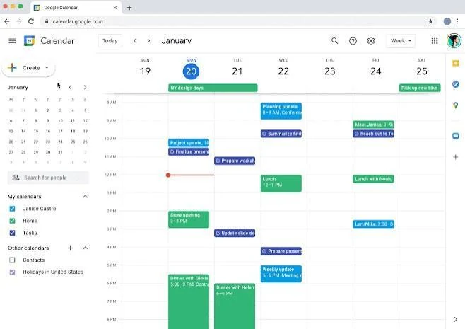
J’observe
Para falar da semana, escolha um ponto de referência: aujourd’hui. Observe como hier, avant-hier e demain se posicionam em relação a ele.
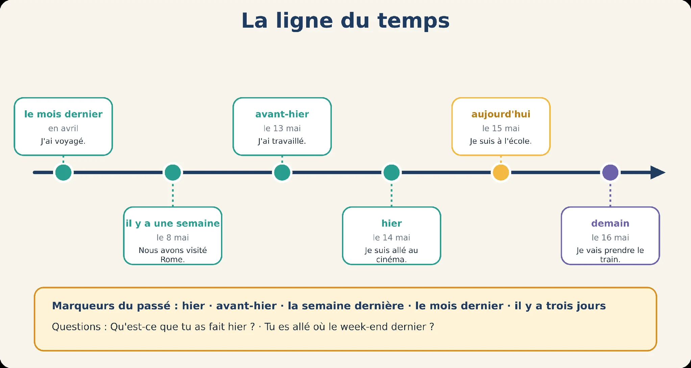
La ligne du temps
Use a data de referência para localizar os quatro momentos. Escreva o dia da semana e a data, em francês.
Aujourd’hui, c’est jeudi 15 mai.
Écrivez le jour et la date.
01Avant-hier
02Hier
03Demain
04Il y a une semaine
Responda no seu ritmo. Depois, confira.
J’écoute et je lis
Nadia conta o que faz hoje, o que vai fazer amanhã e o que fez ontem. Acompanhe essas mudanças na conversa.
Nadia, tu travailles aujourd’hui ?
Oui, aujourd’hui je travaille au bureau, toute la journée.
Et demain ?
Demain, je vais visiter le musée avec ma sœur.
Et hier ? Tu as travaillé ?
Oui, hier j’ai travaillé à la maison. Et le soir, j’ai regardé un film avec mon copain.
Quel film ?
Une comédie. Nous avons beaucoup rigolé !
Retome a conversa de Nadia. Primeiro, escolha Vrai ou Faux; depois, reescreva as afirmações falsas.
Escolha uma resposta em cada item.
01Aujourd’hui, Nadia travaille au bureau.
02Demain, elle va visiter le musée avec sa mère.
03Hier, elle a travaillé au bureau.
04Hier soir, elle a regardé un film.
05Le film est un film d’action.
Responda no seu ritmo. Depois, confira.
À vous d’écrire
Sua reescrita é livre: compare-a com o diálogo e com as explicações dos itens.
As seis frases são da conversa de Nadia. Classifique cada uma e observe os grupos que você formou.
Escolha uma resposta em cada item.
01je travaille au bureau
02je vais visiter le musée
03j’ai travaillé à la maison
04j’ai regardé un film
05nous avons rigolé
06tu travailles aujourd’hui
Responda no seu ritmo. Depois, confira.
Je découvre
Compare a mesma ação em três momentos. O que muda entre je travaille, je vais travailler e j’ai travaillé?
| Aujourd’hui (présent) | Demain (futur proche) | Hier (passé composé) |
|---|---|---|
| je travaille | je vais travailler | j’ai travaillé |
| tu regardes | tu vas regarder | tu as regardé |
| elle mange | elle va manger | elle a mangé |
| nous dînons | nous allons dîner | nous avons dîné |
| vous écoutez | vous allez écouter | vous avez écouté |
| ils visitent | ils vont visiter | ils ont visité |
Observe a tabela anterior como um detetive: descubra quantas partes há no verbo e o papel de cada uma.
Observez les exemples et complétez les quatre indices.
01Au passé, le verbe a combien de mots ?
02Ai, as, a, avons, avez, ont : quel verbe ?
03Travaillé, regardé : quelle terminaison ?
04Passé composé = … + …
Responda no seu ritmo. Depois, confira.
Seu texto da versão anterior foi preservado. Você pode aproveitá-lo nos novos campos.
Je retiens
Agora reúna as pistas que encontrou. Compare o sujeito, o auxiliar e o particípio no esquema.
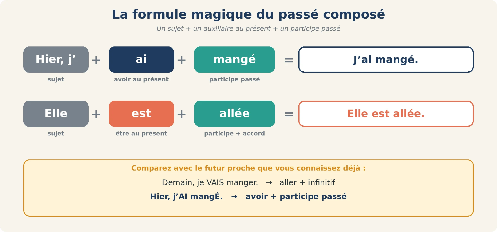
La formule magique du passé composé
Je retiens
Use a síntese para transformar os exemplos: primeiro escolha a forma de avoir; depois forme o particípio do verbo em -er. Nos próximos exercícios, você vai reconhecer, separar e escrever essas partes.
*Passé composé = sujet + avoir au présent + participe passé.*
Verbes en -er : travailler → travaillé, regarder → regardé, manger → mangé.
On utilise le passé composé avec : hier, avant-hier, la semaine dernière, le mois dernier, il y a trois jours, samedi dernier...
Agora reconheça a mesma diferença em outras frases. Escolha o tempo de cada ação.
Escolha uma resposta em cada item.
01J’ai téléphoné à Marc.
02Je vais partir à 8 heures.
03Nous travaillons le lundi.
04Ils ont visité Paris.
05Tu vas manger avec nous ?
06Vous avez écouté la radio ?
07Elle mange une pomme.
08J’ai regardé un match.
Responda no seu ritmo. Depois, confira.
Separe cada frase em sujeito, auxiliar avoir e particípio. Preencha as células da mesma linha.
Écrivez chaque partie dans la bonne colonne.
| Phrase | Sujet | Avoir | Participe |
|---|---|---|---|
| Hier, j’ai travaillé. | j’ | ||
| Tu as regardé le match ? | |||
| Mes parents ont visité Rome. | |||
| Nous avons dîné au restaurant. | |||
| Elle a écouté un podcast. |
Responda no seu ritmo. Depois, confira.
Seu texto da versão anterior foi preservado. Você pode aproveitá-lo nos novos campos.
Transforme as frases como no exemplo. Preserve a ação e comece cada resposta por Hier.
Aujourd’hui, je travaille. → Hier, j’ai travaillé.
Reescreva a frase completa começando por « Hier, … ».
01Aujourd’hui, je regarde un film.
02Aujourd’hui, je mange une pizza.
03Aujourd’hui, j’écoute la radio.
04Aujourd’hui, je téléphone à ma mère.
05Aujourd’hui, je dîne avec Paul.
Responda no seu ritmo. Depois, confira.
Je joue
Use este jogo para recuperar as formas estudadas. Primeiro tente responder; depois consulte a ajuda para revisar.
No treino individual, leia uma frase, escolha seu tempo e transforme as frases no presente em passado. Confira antes de passar à próxima. Em dupla, uma pessoa lê e a outra responde.
Je danse.
J’ai chanté.
Je vais nager.
Je cuisine.
J’ai joué au foot.
Je vais travailler.
Je parle français.
J’ai visité Lyon.
Encore plus
Retome o que aprendeu e amplie seu uso nas próximas atividades.
J’écoute et je lis
Karim e Julie se encontram na segunda-feira. Observe como distinguem o fim de semana passado dos planos para esta noite.
Salut Karim ! Ça va ? Tu as passé un bon week-end ?
Oui, très bon ! Samedi, j’ai travaillé dans le jardin et dimanche, j’ai cuisiné avec mes enfants. Et toi, Julie ?
Moi, j’ai passé le week-end chez mes parents, à Lille. Nous avons beaucoup parlé !
Super ! Et aujourd’hui ?
Aujourd’hui, je suis fatiguée... Ce soir, je vais me coucher tôt !
Em outra conversa de segunda-feira, Karim e Julie contam o fim de semana. Relacione cada afirmação ao que disseram.
Escolha uma resposta em cada item.
01Karim a passé un mauvais week-end.
02Samedi, il a travaillé dans le jardin.
03Dimanche, il a cuisiné seul.
04Julie a passé le week-end chez ses parents.
05Ce soir, Julie va sortir.
Responda no seu ritmo. Depois, confira.
À vous d’écrire
Sua reescrita é livre: compare-a com o diálogo e com as explicações dos itens.
Leia a agenda de Léa. Aqui a referência mudou: hoje é lundi 13 mai. Use essa data em todas as respostas.
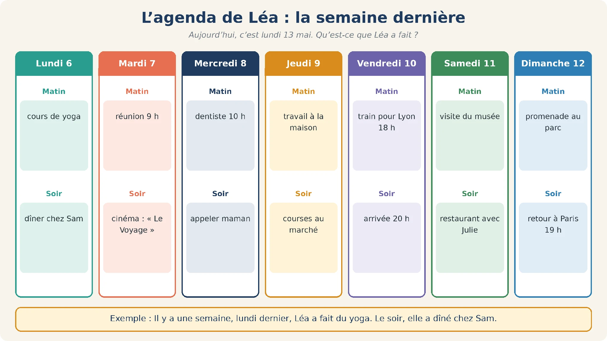
Aujourd’hui, c’est lundi 13 mai.
Lundi 6 : matin, cours de yoga ; soir, dîner chez Sam.
Mardi 7 : matin, réunion 9 h ; soir, cinéma : « Le Voyage ».
Mercredi 8 : matin, dentiste 10 h ; soir, appeler maman.
Jeudi 9 : matin, travail à la maison ; soir, courses au marché.
Vendredi 10 : sous la rubrique Matin, train pour Lyon 18 h ; soir, arrivée 20 h.
Samedi 11 : matin, visite du musée ; soir, restaurant avec Julie.
Dimanche 12 : matin, promenade au parc ; soir, retour à Paris 19 h.
Exemple : Il y a une semaine, lundi dernier, Léa a fait du yoga. Le soir, elle a dîné chez Sam.
Aujourd’hui, c’est lundi 13 mai.
Escolha uma resposta em cada item.
01Il y a une semaine, Léa a fait du yoga.
02Mardi dernier, elle a regardé un film au cinéma.
03Avant-hier, elle a visité un musée.
04Hier, elle a pris le train pour Lyon.
05Jeudi dernier, elle a dîné chez Sam.
Responda no seu ritmo. Depois, confira.
À vous d’écrire
Sua reescrita é livre: compare-a com o diálogo e com as explicações dos itens.
Je parle
Agora fale do seu próprio dia. Escolha três ações que você realizou ontem e use três verbos diferentes em -er. Depois confira se cada frase tem o auxiliar e o particípio.
Écrivez 3 phrases sur votre journée d’hier avec 3 verbes en -er : Hier, j’ai...
Relisez votre préparation, puis essayez de la dire à voix haute sans lire. Reprenez une phrase si elle n’est pas encore claire.
Je fais le point
Marque o que você já consegue fazer e retome os pontos que ainda precisam de treino. Esta é uma autoavaliação.
Seu trabalho
Salve neste navegador ou baixe uma cópia. Não há envio automático ao professor.
Salve suas respostas antes de fechar.
Continuidade
J’ai travaillé, j’ai regardé : avoir + -é
Unité 10 · Missão 2 de 7
Conte o que fez ontem usando avoir e verbos em -er.
La situation
Vous déjeunez avec Claire, une collègue française. Elle vous demande : « Qu’est-ce que tu as fait dimanche ? »
Você já reconhece o passado. Agora vai escolher a forma de avoir e formar os particípios em -é para contar pequenas ações do seu dia.
J’observe
Observe a conversa ao redor da mesa e os alimentos. Imagine o que essas pessoas beberam, comeram e conversaram. Essas hipóteses preparam o relato de um domingo.
J’écoute et je lis
Inès e Paul contam seus domingos. Durante a conversa, identifique quem realiza cada ação e com quem.
Salut Inès ! Tu as passé un bon dimanche ?
Oui, très calme. Le matin, j’ai rangé mon appartement et j’ai écouté de la musique.
Tu as déjeuné chez toi ?
Non, j’ai déjeuné chez mes parents. Ma mère a préparé un couscous délicieux ! Et toi, Paul ?
Moi, j’ai travaillé un peu, puis j’ai joué au tennis avec Marc. Le soir, nous avons regardé un match à la télé.
Et au tennis, tu as gagné ?
Non, Marc a gagné... comme toujours !
Observe quem fez cada atividade no domingo: Inès, sua mãe ou Paul. Depois corrija as afirmações falsas.
Escolha uma resposta em cada item.
01Inès a rangé son appartement.
02Elle a déjeuné au restaurant.
03Sa mère a préparé un couscous.
04Paul a joué au tennis avec Marc.
05Paul a gagné.
Responda no seu ritmo. Depois, confira.
À vous d’écrire
Sua reescrita é livre: compare-a com o diálogo e com as explicações dos itens.
Recolha os verbos do diálogo e associe cada ação à pessoa que a realizou.
Relevez les verbes du dialogue.
| Qui ? | Qu’est-ce qu’il / elle a fait ? |
|---|---|
| Inès | |
| La mère d’Inès | |
| Paul | |
| Paul et Marc |
Seu texto da versão anterior foi preservado. Você pode aproveitá-lo nos novos campos.
Uma pessoa pode ter feito mais de uma ação.
Use a forma verbal completa: auxiliar e particípio.
Para localizar quem fez cada ação, volte ao sujeito da fala. Inès diz j’ai rangé e j’ai écouté; ao registrar o relato sobre ela, a forma passa a elle a rangé / elle a écouté. Paul et Marc pede a forma plural ont.
Compare as informações e as formas abaixo com o que você escreveu. Nas partes livres, use-as como apoio, não como uma única resposta possível.
Inès : a rangé, a écouté, a déjeuné
la mère : a préparé
Paul : a travaillé, a joué
Paul et Marc : ont regardé un match (Marc a gagné).
Esta revisão é sua. O site não atribui nota à produção livre.
Je retiens
No diálogo, várias pessoas contam suas ações. Compare a coluna do sujeito com a forma de avoir; o particípio de cada verbo permanece o mesmo nos exemplos desta tabela.
| Sujet | avoir | travailler | regarder | jouer |
|---|---|---|---|---|
| je / j’ | ai | j’ai travaillé | j’ai regardé | j’ai joué |
| tu | as | tu as travaillé | tu as regardé | tu as joué |
| il / elle / on | a | il a travaillé | elle a regardé | on a joué |
| nous | avons | nous avons travaillé | nous avons regardé | nous avons joué |
| vous | avez | vous avez travaillé | vous avez regardé | vous avez joué |
| ils / elles | ont | ils ont travaillé | elles ont regardé | ils ont joué |
Je retiens
Depois de escolher o auxiliar, forme o particípio. Compare parler → parlé e acheter → acheté. A dica com vendre ajuda a distinguir formas que soam parecidas.
Verbes en -er : on enlève -er, on ajoute -é : parler → parlé, acheter → acheté.
Avec avoir, le participe ne change pas : Elle a travaillé. Elles ont travaillé.
Astuce : mangé, manger, mangez se prononcent pareil. Remplacez par vendre : j’ai vendu → mangé ; je vais vendre → manger.
Je prononce
Compare o som de je travaille com j’ai travaillé. Repita os grupos com nous, vous e ils, prestando atenção à ligação indicada entre as palavras.
Écoutez et répétez : je travaille [ʒə] / j’ai travaillé [ʒe]. Faites la liaison : nous‿avons [z], vous‿avez [z], ils‿ont [z].
Ouça e repita os exemplos. A voz é sintética; a pronúncia ainda precisa de revisão no dispositivo.
Mantenha o particípio que já aparece na frase e complete somente o auxiliar.
Digite somente a forma que completa a lacuna, com os acentos.
01Hier, j’___ regardé un match.
02Tu ___ téléphoné à Julie ?
03Nous ___ dîné chez Paul.
04Mes parents ___ acheté une voiture.
05Vous ___ visité le musée ?
06Léa ___ écouté la radio.
07Les enfants ___ joué au parc.
08On ___ mangé au restaurant.
Responda no seu ritmo. Depois, confira.
Transforme cada infinitivo em particípio passado. Aqui você escreve apenas o particípio.
Écrivez le participe passé.
01parler
02danser
03chanter
04acheter
05appeler
06jouer
07visiter
08écouter
09commencer
10voyager
Responda no seu ritmo. Depois, confira.
Passe cada ação do presente para o passé composé, mantendo o sujeito e os complementos.
Escreva a frase completa no passé composé.
01Je regarde un film.
02Tu manges une pizza.
03Il travaille à la maison.
04Nous écoutons la radio.
05Vous visitez Paris.
06Elles dansent toute la nuit.
Responda no seu ritmo. Depois, confira.
As formas podem soar parecidas. Escolha a grafia a partir da posição do verbo na frase.
Escreva a forma completa do verbo indicado entre parênteses.
01J’ai (regard...) la télévision.
02Je vais (regard...) la télévision.
03Vous (regard...) la télévision ?
04Elle a (travaill...) tard.
05Nous allons (dîn...) chez Paul.
06Tu as (téléphon...) à Marc ?
Responda no seu ritmo. Depois, confira.
Complete o relato do sábado de Léo. A sequência deve continuar fazendo sentido como uma história.
Complete cada trecho do relato com auxiliar e particípio.
01Léo (travailler) ___ le matin.
02À midi, il (déjeuner) ___ avec sa sœur.
03L’après-midi, ils (visiter) ___ une exposition.
04Ils (acheter) ___ des cartes postales.
05Le soir, Léo (inviter) ___ des amis.
06Ils (manger) ___ une pizza.
07Ils (regarder) ___ un film.
08Ils (rigoler) ___ toute la soirée !
Responda no seu ritmo. Depois, confira.
Je joue
Use este jogo para recuperar as formas estudadas. Primeiro tente responder; depois consulte a ajuda para revisar.
Règle du jeu : avec votre professeur, à tour de rôle. Il dit Hier, j’ai dansé. Vous répétez et ajoutez : Hier, vous avez dansé et moi, j’ai chanté. Il continue avec une troisième action... Le premier qui oublie une action a perdu ! Verbes possibles :
No treino individual, escreva a primeira ação. Releia a sequência e acrescente outra sem apagar as anteriores. Depois tente repeti-la em voz alta sem olhar.
Je parle
Responda às perguntas sobre ontem com frases completas. Prepare cada resposta antes de dizer em voz alta; depois use o mesmo roteiro em uma conversa.
Répondez avec une phrase complète : Oui, j’ai travaillé jusqu’à 18 heures.
Relisez votre préparation, puis essayez de la dire à voix haute sans lire. Reprenez une phrase si elle n’est pas encore claire.
Encore plus
Retome o que aprendeu e amplie seu uso nas próximas atividades.
J’écoute et je lis
Duas pessoas que dividem a casa contam o que fizeram. Repare nas perguntas usadas para saber quais tarefas já foram realizadas.
Salut ! Tu as passé une bonne journée ?
Oui, très bonne. J’ai rangé le salon et j’ai lavé la vaisselle.
Merci ! Tu as cuisiné aussi ?
Oui, j’ai préparé une soupe. Et toi, tu as travaillé tard ?
Oui, j’ai terminé à 19 heures. Et j’ai acheté du pain pour ce soir.
Parfait ! Tu as appelé le propriétaire pour le chauffage ?
Oh non, j’ai oublié !
Je parle
Você divide a casa com outra pessoa. Prepare perguntas sobre as tarefas que ela realizou e respostas sobre sua própria jornada. Depois troque o papel de quem pergunta e de quem responde.
Situation : vous habitez en colocation. Le soir, vous parlez de votre journée.
No estudo individual, prepare as falas dos dois papéis. Escolha primeiro um deles, responda em voz alta e depois troque de papel. Na conversa acompanhada, use essas anotações como apoio.
Boîte à outils : Qu’est-ce que tu as fait aujourd’hui ? · J’ai rangé... · Tu as cuisiné ? · Oui, j’ai préparé... · Et toi ?
🔄 Puis inversez les rôles : vous jouez B et votre professeur joue A.
Je parle
Reúna cinco ações diferentes do seu domingo. Escreva uma frase para cada ação e revise o auxiliar e a terminação -é antes de reler o conjunto.
Racontez votre dimanche en 5 phrases, avec 5 verbes en -er différents.
Relisez votre préparation, puis essayez de la dire à voix haute sans lire. Reprenez une phrase si elle n’est pas encore claire.
Je fais le point
Marque o que você já consegue fazer e retome os pontos que ainda precisam de treino. Esta é uma autoavaliação.
Seu trabalho
Salve neste navegador ou baixe uma cópia. Não há envio automático ao professor.
Salve suas respostas antes de fechar.
Continuidade
J’ai fini, j’ai attendu, j’ai pris : les autres participes
Unité 10 · Missão 3 de 7
Amplie o relato com particípios em -i, -u e formas irregulares.
La situation
Vous écrivez un message ou un petit article de blog pour raconter votre samedi.
Nem toda ação termina em -é. Observe o sábado de Clara, descubra outras terminações e reúna os verbos de que precisa para escrever seu relato.
J’observe
As imagens mostram ler, esperar e escrever. Formule hipóteses sobre o que foi lido, o tempo de espera e o destinatário da mensagem. Compare lu, attendu e écrit.
Qu’est-ce qu’elle a lu ? Combien de temps il a attendu le bus ? À qui elle a écrit ? Imaginez !
Je lis et j’observe
Clara conta um sábado tranquilo. Observe os particípios destacados e como as ações se distribuem ao longo do dia.
Samedi dernier, j’ai passé une journée tranquille. Le matin, j’ai dormi jusqu’à 9 heures. Ensuite, j’ai pris mon petit-déjeuner et j’ai lu le journal. À midi, j’ai téléphoné à ma grand-mère : nous avons parlé pendant une heure !
L’après-midi, j’ai attendu mon amie Nina au café. Nous avons bu un chocolat chaud et nous avons choisi un film pour le soir. Puis j’ai fait des courses : j’ai acheté des fruits et du pain. Le soir, Hugo et Nina ont dîné chez moi. Nous avons vu le film et nous avons fini la soirée avec un jeu de cartes. Hugo a gagné et il a mis la musique très fort !
Retome os particípios do texto de Clara e organize-os por terminação. Registre suas escolhas em cada coluna. Você pode registrar várias formas na mesma célula, separadas por vírgulas.
Para esta classificação, observe os destaques do texto. O conjunto de particípios destacado e o conjunto de exemplos de revisão não são idênticos; por isso, não há nota automática para a seleção.
Écrivez chaque participe du texte dans la bonne colonne.
| -é | -i | -u | Autres |
|---|---|---|---|
| passé | |||
Seu texto da versão anterior foi preservado. Você pode aproveitá-lo nos novos campos.
Compare a terminação escrita. A coluna Autres recebe formas como pris, fait e mis.
Observe os destaques do texto; a seleção de palavras será revisada com o professor.
A classificação observa a forma escrita do particípio no texto, não o infinitivo: passé entra em -é, dormi em -i e lu em -u. O grupo « autres » reúne formas como pris, fait e mis. Compare também a palavra destacada com o conjunto do relato.
Compare as informações e as formas abaixo com o que você escreveu. Nas partes livres, use-as como apoio, não como uma única resposta possível.
-é : passé, téléphoné, parlé, acheté, dîné, gagné
-i : dormi, choisi, fini
-u : lu, attendu, bu, vu
autres : pris, fait, mis.
Esta revisão é sua. O site não atribui nota à produção livre.
Compare cada família de infinitivos com os particípios e escreva a terminação observada.
Registre a terminação observada nesta tabela, sem generalizar a todos os verbos.
01finir, choisir, dormir → fini, choisi, dormi : -ir → ___
02attendre, perdre, vendre → attendu, perdu, vendu : -re → ___
03voir, boire, lire → vu, bu, lu : irréguliers en ___
04prendre, mettre → pris, mis : irréguliers en ___
05faire, dire, écrire → fait, dit, écrit : irréguliers en ___
Responda no seu ritmo. Depois, confira.
Je retiens
Use o quadro para relacionar cada infinitivo ao particípio. Observe as famílias, sem presumir que todos os verbos terminam em -é.
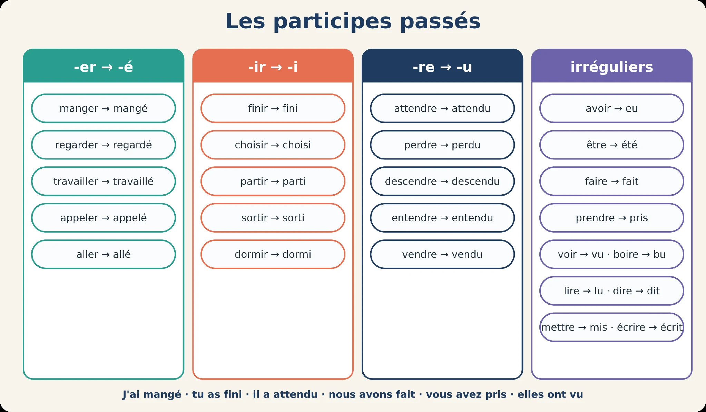
Les participes passés (attention : aller, partir, sortir et descendre se conjuguent avec être : mission 4)
Je retiens
Organize as formas em famílias e pratique exemplos completos com avoir. Retome esta síntese quando precisar completar ou transformar uma frase.
-er → -é (mangé) · -ir → -i (fini) · -re → -u (attendu).
Les irréguliers s’apprennent par familles : vu, bu, lu, eu · pris, mis, compris, appris · fait, dit, écrit · été.
Tous ces verbes utilisent avoir : j’ai fini, j’ai pris, j’ai vu.
Je prononce
Leia os exemplos e pratique em voz alta. Compare as formas com apoio do professor; o site não avalia sua pronúncia.
Uma indicação fonética deste trecho está em revisão. Não use o agrupamento de « fait » como referência validada; confirme esse ponto com o professor.
Trois sons pour finir : [e] mangé · [i] fini, pris, fait · [y] attendu, vu, eu. Attention : eu se prononce [y] : j’ai eu [ʒey].
Complete o particípio e identifique sua família. Use a tabela anterior para revisar os verbos irregulares.
Donnez le participe, puis choisissez sa famille.
| Infinitif | Participe | Famille |
|---|---|---|
| finir | ||
| regarder | ||
| attendre | ||
| prendre | ||
| choisir | ||
| voir | ||
| répondre | ||
| écrire |
Responda no seu ritmo. Depois, confira.
Seu texto da versão anterior foi preservado. Você pode aproveitá-lo nos novos campos.
Complete os verbos deste grupo com auxiliar e particípio.
Digite somente a forma que completa a lacuna, com os acentos.
01Nous (finir) ______ le projet.
02Tu (choisir) ______ un dessert ?
03Le bébé (dormir) ______ toute la nuit.
04J’(réussir) ______ mon examen !
05Ils (grandir) ______ à Marseille.
Responda no seu ritmo. Depois, confira.
Complete os exemplos em -re, mantendo a pessoa verbal de cada frase.
Digite somente a forma que completa a lacuna, com os acentos.
01J’(attendre) ______ le bus 20 minutes.
02Elle (perdre) ______ ses clés.
03Vous (entendre) ______ la musique ?
04Mon voisin (vendre) ______ sa voiture.
05Tu (répondre) ______ au message ?
Responda no seu ritmo. Depois, confira.
Associe cada infinitivo ao particípio correspondente.
Selecione o particípio correspondente.
01faire
02prendre
03dire
04écrire
05voir
06boire
07lire
08être
Responda no seu ritmo. Depois, confira.
Observe as três formas que seguem o mesmo padrão e identifique a diferente.
Dans chaque série, écrivez le participe différent.
01fini · choisi · pris · dormi
02vu · bu · lu · fait
03mangé · parlé · écrit · joué
04attendu · perdu · mis · vendu
Responda no seu ritmo. Depois, confira.
Use os diferentes particípios para reescrever as frases no passado.
Escreva a frase completa no passé composé.
01Je mange une pizza.
02Tu finis tes devoirs.
03Nous attendons le train.
04Il prend le bus.
05Elles font du sport.
06Vous voyez Paul.
07J’écris un message.
08Tu bois un café.
Responda no seu ritmo. Depois, confira.
Complete a história da noite de cinema, prestando atenção à mudança de sujeito no final.
Complete com auxiliar e particípio. Não repita o sujeito já escrito no trecho.
01J’(attendre) ___ mon ami Tom devant le cinéma.
02J’(boire) ___ un café.
03J’(lire) ___ mes messages.
04Finalement, j’(prendre) ___ un billet.
05J’(voir) ___ le film seule.
06Tom (écrire) ___ à 23 heures.
07Il (dormir) ___ tout l’après-midi !
Responda no seu ritmo. Depois, confira.
Je joue
Use este jogo para recuperar as formas estudadas. Primeiro tente responder; depois consulte a ajuda para revisar.
Encontre os pares infinitivo → particípio. Abra duas cartas por vez; depois use um par em uma frase. A atividade está aqui, sem precisar abrir outro site.
Le participe en chaîne : votre professeur dit un infinitif (prendre), vous donnez le participe et vous faites une phrase (Hier, j’ai pris le bus), puis vous lui donnez un nouvel infinitif. Interdit de répéter un verbe !
Je parle
Prepare respostas sobre o que bebeu, leu, viu, escreveu e fez ontem. As perguntas ajudam a variar os particípios, em vez de repetir sempre o mesmo verbo.
Répondez aux questions de votre professeur, puis posez-lui les mêmes questions et résumez ses réponses : Hier, mon professeur a bu... Il a lu...
Relisez votre préparation, puis essayez de la dire à voix haute sans lire. Reprenez une phrase si elle n’est pas encore claire.
Encore plus
Retome o que aprendeu e amplie seu uso nas próximas atividades.
J’écoute et je lis
Sarah fala de um livro e de um filme; Tom conta como passou o tempo esperando. Reconheça os particípios que acabou de estudar.
Salut Sarah ! Tu as fini ton livre ?
Oui, j’ai fini hier soir. J’ai beaucoup aimé !
Et tu as vu le film ?
Non, pas encore. Mais j’ai pris des billets pour samedi.
Génial ! Moi, ce matin, j’ai attendu le bus 40 minutes...
Oh non ! Tu as perdu beaucoup de temps !
Oui, mais j’ai lu mes messages et j’ai bu un café. Et j’ai écrit à ma sœur !
Observe o que Sarah já fez e o que Tom fez durante a espera.
Escolha uma resposta em cada item.
01Sarah a fini son livre hier soir.
02Sarah a vu le film.
03Elle a pris des billets pour samedi.
04Tom a attendu le métro.
05Tom a écrit à sa sœur.
Responda no seu ritmo. Depois, confira.
À vous d’écrire
Sua reescrita é livre: compare-a com o diálogo e com as explicações dos itens.
Je parle
Conte o dia de ontem em seis frases, usando seis particípios diferentes. Na revisão, identifique pelo menos uma forma em -é, uma em -i, uma em -u e uma irregular.
Racontez votre journée d’hier en 6 phrases avec 6 participes différents : au moins un en -é, un en -i, un en -u et un irrégulier.
Relisez votre préparation, puis essayez de la dire à voix haute sans lire. Reprenez une phrase si elle n’est pas encore claire.
Je fais le point
Marque o que você já consegue fazer e retome os pontos que ainda precisam de treino. Esta é uma autoavaliação.
Seu trabalho
Salve neste navegador ou baixe uma cópia. Não há envio automático ao professor.
Salve suas respostas antes de fechar.
Continuidade
Je suis allé(e) : le passé composé avec être
Unité 10 · Missão 4 de 7
Relate deslocamentos e viagens, observando a concordância.
La situation
Vous rentrez de voyage. À l’aéroport, un ami vous demande : « Tu es allé(e) où ? Tu es resté(e) combien de temps ? »
Agora o relato inclui deslocamentos e viagens. Compare quem realizou cada ação para escolher o auxiliar e observar as terminações com être.
J’observe
Observe a estação e o cartão-postal. Imagine quem está chegando ou partindo e com quem viajou. Em seguida, compare suas hipóteses com o relato de Lisa.
J’écoute et je lis
Lisa e Hugo comparam suas férias. Acompanhe quem viajou, quem ficou e quem veio visitar.
Tu es allée où pendant les vacances ?
Je suis allée en Italie avec ma sœur. Nous sommes parties le 10 juillet et nous sommes rentrées le 24.
Vous êtes restées à Rome ?
Non, nous sommes allées à Florence aussi. Et toi, Hugo ?
Moi, je suis resté à Paris. Mais mes parents sont venus une semaine !
Observe a terminação dos particípios e relacione-a às pessoas do diálogo.
Relevez les verbes avec être et observez la fin du participe.
| Verbe | Qui ? | Fin du participe | Pourquoi ? |
|---|---|---|---|
| es allée | Lisa (tu) | -e | une femme |
| sommes parties | |||
| suis resté | |||
| sont venus |
Seu texto da versão anterior foi preservado. Você pode aproveitá-lo nos novos campos.
O exemplo de Lisa já está preenchido. Faça a mesma análise nas demais linhas.
Relacione sujeito, gênero/número e terminação; revise com o exemplo.
O diálogo identifica Lisa e a irmã como nous: por isso, parties termina em -es. Em suis resté, quem fala é Hugo; em sont venus, a referência é mes parents. A explicação depende de identificar quem está por trás de cada pronome.
Compare as informações e as formas abaixo com o que você escreveu. Nas partes livres, use-as como apoio, não como uma única resposta possível.
sommes parties : Lisa et sa sœur, -es, deux femmes
suis resté : Hugo, rien, un homme
sont venus : ses parents, -s, pluriel (groupe mixte).
Esta revisão é sua. O site não atribui nota à produção livre.
Je retiens
Reúna os verbos apresentados nas famílias e observe seus exemplos com être. A tabela ajuda a preparar os relatos de deslocamentos e viagens desta missão.
| Famille | Verbes avec être | Exemple |
|---|---|---|
| 1. Mouvement | aller, venir, arriver, partir, entrer, sortir, monter, descendre, passer, tomber, retourner | Elle est passée par Lyon. |
| 2. Retour (re-) | revenir, rentrer, repartir, ressortir, remonter, redescendre | Ils sont revenus hier. |
| 3. État | rester, devenir, naître (né), mourir (mort) | Elle est devenue médecin. |
| 4. Pronominaux | se lever, se coucher, se promener, se reposer, s’habiller, se marier... | Nous nous sommes promenés. |
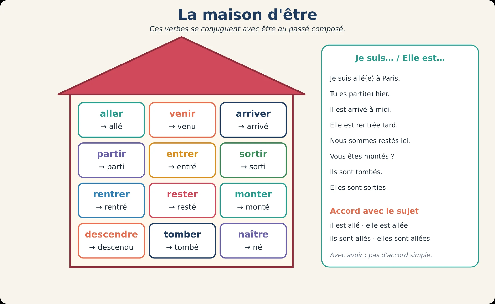
La maison d’être
| Sujet | Masculin | Féminin |
|---|---|---|
| je | je suis allé | je suis allée |
| tu | tu es allé | tu es allée |
| il / elle | il est allé | elle est allée |
| nous | nous sommes allés | nous sommes allées |
| vous | vous êtes allé(s) | vous êtes allée(s) |
| ils / elles | ils sont allés | elles sont allées |
Je retiens
Compare quem realiza a ação com o final do particípio. Observe as marcas de feminino e plural e use os exemplos para revisar suas próprias frases.
Avec être, le participe s’accorde avec le sujet : +e (féminin), +s (pluriel). Elle est allée. Ils sont partis. Elles sont restées.
Un groupe mixte → masculin pluriel : Marie et Paul sont allés au cinéma.
Attention : être et avoir utilisent avoir : j’ai été, j’ai eu.
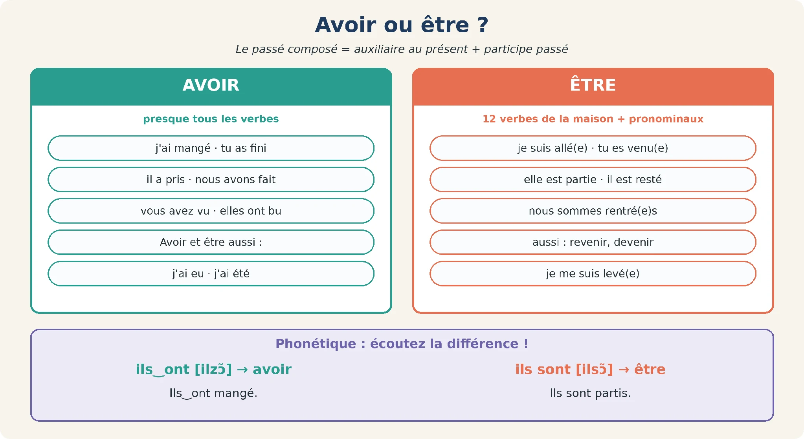
Avoir ou être ?
Je prononce
Leia os dois exemplos em voz alta: ils ont mangé e ils sont partis. Preste atenção à diferença indicada entre ils ont e ils sont, além da escolha do auxiliar.
ils‿ont [ilzɔ̃] → avoir · ils sont [ilsɔ̃] → être. Écoutez : Ils‿ont mangé. / Ils sont partis.
Ouça e repita os exemplos. A voz é sintética; a pronúncia ainda precisa de revisão no dispositivo.
Escolha o auxiliar para cada verbo. Em seguida, escreva uma frase começando por Hier, je… em cada linha.
Escolha o auxiliar. Depois, escreva as frases completas no campo de produção.
01partir
02manger
03arriver
04prendre
05rester
06se lever
Responda no seu ritmo. Depois, confira.
Seu texto da versão anterior foi preservado. Você pode aproveitá-lo nos novos campos.
Complete cada ação com être e o particípio; observe as indicações de gênero e número.
Digite somente a forma que completa a lacuna, com os acentos.
01Marie (aller) ______ au cinéma.
02Paul et Luc (partir) ______ hier.
03Nous (arriver – deux filles) ______ à midi.
04Je (rentrer – un homme) ______ tard.
05Elles (rester) ______ à la maison.
06Tu (sortir – une femme) ______ ?
07Madame, vous (venir) ______ en bus ?
08Ils (se lever) ______ à 7 heures.
Responda no seu ritmo. Depois, confira.
Encore plus
Retome o que aprendeu e amplie seu uso nas próximas atividades.
J’observe
Inès escreve de Nice para Camille. Leia o cartão como uma sequência de dias e observe as ações com avoir e être.
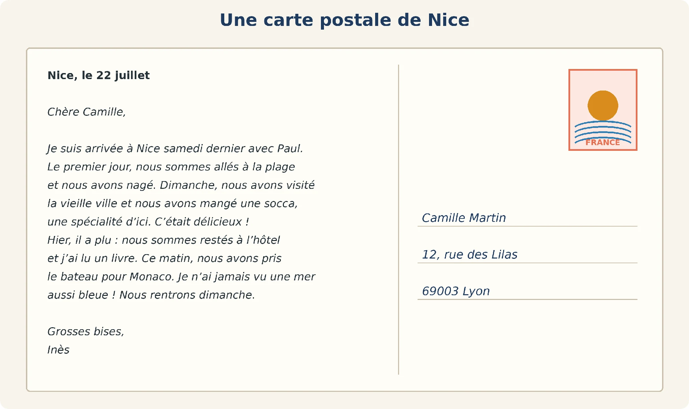
Nice, le 22 juillet
Chère Camille,
Je suis arrivée à Nice samedi dernier avec Paul. Le premier jour, nous sommes allés à la plage et nous avons nagé. Dimanche, nous avons visité la vieille ville et nous avons mangé une socca, une spécialité d’ici. C’était délicieux !
Hier, il a plu : nous sommes restés à l’hôtel et j’ai lu un livre. Ce matin, nous avons pris le bateau pour Monaco. Je n’ai jamais vu une mer aussi bleue ! Nous rentrons dimanche.
Grosses bises,
Inès
Destinataire : Camille Martin, 12, rue des Lilas, 69003 Lyon.
Carte postale d’Inès à Camille (verbes avec avoir et être)
Leia o cartão-postal de Inès. Responda às perguntas e depois prepare seu próprio cartão.
Production : écrivez une carte postale à un(e) ami(e) (50 mots) depuis une ville de votre choix. Utilisez au moins 3 verbes avec être et 3 verbes avec avoir.
Seu texto da versão anterior foi preservado. Você pode aproveitá-lo nos novos campos.
Separe o que aconteceu no primeiro dia, no domingo, ontem e hoje de manhã.
Na produção, mantenha o objetivo: cerca de 50 palavras, três verbos com être e três com avoir.
O cartão-postal mistura ações de Inès sozinha e do casal. Compare je suis arrivée com nous sommes allés: o primeiro particípio se refere a Inès, e o segundo a Inès e Paul. Localize essas referências antes de escrever seu próprio cartão.
Compare as informações e as formas abaixo com o que você escreveu. Nas partes livres, use-as como apoio, não como uma única resposta possível.
1. Inès écrit à Camille, de Nice.
2. Avec Paul ; samedi dernier.
3. Ils sont allés à la plage et ils ont nagé.
4. Parce qu’il a plu.
5. Avoir : avons nagé, avons visité, avons mangé, a plu, ai lu, avons pris, ai vu. Être : suis arrivée, sommes allés, sommes restés.
6. Arrivée : Inès est une femme ; allés : Inès et Paul, groupe mixte → masculin pluriel.
Esta revisão é sua. O site não atribui nota à produção livre.
J’observe
Observe cada momento do dia de Julie. Escreva uma frase junto a cada foto; depois use suas anotações para compor o relato.
Huit photos, une par moment de la journée. Racontez la journée de Julie au passé composé : attention à l’accord au féminin avec être (elle s’est levée, elle est allée).
Use as oito fotos para construir o relato de Julie. Depois explore as mudanças de personagem e prepare seu próprio relato.
À l’oral avec votre professeur, puis à l’écrit. Utilisez d’abord, ensuite, puis, après, enfin et les heures.
Seu texto da versão anterior foi preservado. Você pode aproveitá-lo nos novos campos.
Observe o horário e o verbo de cada foto. Acrescente d’abord, ensuite, puis, après ou enfin.
Confira a sequência, os horários e a concordância ao falar de Julie, de duas mulheres ou de Karim.
As fotos fornecem a sequência, mas o relato precisa ligar os acontecimentos. Em elle s’est levée e elle est allée, observe o feminino de Julie. Quando mudar para Julie et Léa ou para Karim, revise o sujeito e a terminação em cada frase.
Compare as informações e as formas abaixo com o que você escreveu. Nas partes livres, use-as como apoio, não como uma única resposta possível.
1. Hier, Julie s’est levée à 7 heures. D’abord, elle a pris un café. Ensuite, elle a pris le bus à 8 h 15. Elle a travaillé de 9 heures à midi. À 12 h 30, elle a déjeuné avec Léa. Après le travail, elle est allée voir un match de foot. Puis elle a regardé un film. Enfin, elle s’est couchée à 23 heures et elle a bien dormi.
2. Être (accord) : s’est levée, est allée, s’est couchée ; avoir : a pris, a travaillé, a déjeuné, a regardé, a dormi.
3. Julie et Léa se sont levées, sont allées, se sont couchées... ; Karim s’est levé, est allé, s’est couché...
Esta revisão é sua. O site não atribui nota à produção livre.
J’écoute et je lis
Hugo conta uma viagem com Léa. Observe quando o relato passa de nous para elle ou je e como o particípio acompanha essa mudança.
Salut Hugo ! Tu es rentré quand ?
Je suis rentré dimanche. Nous sommes partis dix jours en Espagne, avec Léa.
Super ! Vous êtes allés où ?
D’abord, nous sommes allés à Barcelone. Ensuite, nous sommes descendus à Valence, en train.
Et Léa est restée avec toi tout le temps ?
Non, elle est revenue à Paris avant moi, pour son travail. Moi, je suis resté trois jours de plus.
Activités : relevez les participes et expliquez chaque accord (rentré : Hugo ; partis / allés : Hugo + Léa ; restée / revenue : Léa).
Agora escolha a forma conjugada de avoir ou être que completa cada frase.
Digite somente a forma que completa a lacuna, com os acentos.
01Nous ___ partis à 8 heures.
02Elle ___ pris un taxi.
03Je ___ arrivé en retard.
04Tu ___ vu Marie ?
05Ils ___ restés à la maison.
06Vous ___ fait vos devoirs ?
07Mon grand-père ___ né en 1950.
08J’___ été malade.
09Elles ___ venues en bus.
10Il ___ tombé dans la rue.
Responda no seu ritmo. Depois, confira.
Acrescente a terminação quando for necessária. Compare os sujeitos e os auxiliares.
Na frase « Nous (Anna et moi) », a identidade de « moi » não está indicada. Registre sua escolha e explique a concordância; esse item não é corrigido automaticamente.
Ajoutez -e, -s, -es ou rien.
Seu texto da versão anterior foi preservado. Você pode aproveitá-lo nos novos campos.
Use +e, +s, +es ou mantenha a forma sem acréscimo.
Na linha Anna et moi, explique quem é moi antes de decidir a concordância.
Primeiro identifique o auxiliar; depois observe o sujeito. Nos exemplos com être, elas pedem a marca feminina e plural. Na frase com Anna, o texto não identifica quem é moi: sua justificativa deve tornar essa escolha explícita.
Compare as informações e as formas abaixo com o que você escreveu. Nas partes livres, use-as como apoio, não como uma única resposta possível.
1. parties
2. mangé (avoir : pas d’accord)
3. née
4. allés
5. acheté
6. rentrées
7. couchés
8. levée.
Esta revisão é sua. O site não atribui nota à produção livre.
Je parle
Escolha uma viagem e prepare pistas sem revelar a cidade. No treino individual, escreva o relato e imagine perguntas para descobrir o destino. Em dupla, use as pistas para o outro adivinhar.
Variante : utiliser des cartes « destination » (Rome, New York, Rio, Tokyo, Marrakech, Montréal).
Relisez votre préparation, puis essayez de la dire à voix haute sans lire. Reprenez une phrase si elle n’est pas encore claire.
Je parle
Explique um atraso usando a sequência de ações indicada. Prepare as perguntas do responsável e as respostas da pessoa atrasada, observando a escolha entre avoir e être.
Situation : B arrive au travail (ou en cours) avec une heure de retard. A, le chef (ou le professeur), demande des explications.
No estudo individual, prepare as falas dos dois papéis. Escolha primeiro um deles, responda em voz alta e depois troque de papel. Na conversa acompanhada, use essas anotações como apoio.
Boîte à outils : Vous êtes arrivé(e) à quelle heure ? · Je me suis levé(e) tard · Je suis parti(e) à... · J’ai attendu le bus · Je suis venu(e) à pied · Excusez-moi !
🔄 Puis inversez les rôles : vous jouez B et votre professeur joue A.
Je parle
Escolha sua última viagem e conte seis acontecimentos. Use pelo menos três verbos com être e releia as concordâncias de acordo com quem participou.
Racontez votre dernier voyage en 6 phrases avec au moins 3 verbes avec être.
Relisez votre préparation, puis essayez de la dire à voix haute sans lire. Reprenez une phrase si elle n’est pas encore claire.
Je fais le point
Marque o que você já consegue fazer e retome os pontos que ainda precisam de treino. Esta é uma autoavaliação.
Seu trabalho
Salve neste navegador ou baixe uma cópia. Não há envio automático ao professor.
Salve suas respostas antes de fechar.
Continuidade
Non, jamais ! La négation et les questions
Unité 10 · Missão 5 de 7
Diga o que não fez e formule perguntas sobre experiências passadas.
La situation
Hier soir, rien ne s’est bien passé : un restaurant décevant… et un vol dans le quartier ! Vous racontez et vous répondez aux questions.
Dizer o que aconteceu também envolve explicar o que não aconteceu. Passe de uma conversa sobre um restaurante a uma investigação, usando perguntas e frases negativas.
J’observe
Observe as imagens e formule uma hipótese sobre o esquecimento. Na segunda cena, compare a pergunta com a resposta negativa antes de ouvir o relato do restaurante.
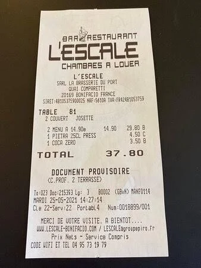
J’écoute et je lis
Uma pessoa descreve uma refeição decepcionante. Observe como ela nega ações e fala de uma experiência anterior.
Tu as aimé le restaurant ?
Non, je n’ai pas beaucoup aimé. Nous n’avons pas mangé de dessert et nous ne sommes pas restés longtemps.
Qu’est-ce que vous avez pris ?
Moi, j’ai pris du poisson. C’était cher !
Tu es déjà allé dans ce restaurant ?
Non, jamais. Et je ne vais pas retourner là-bas !
Retire as frases negativas do diálogo e separe o que aparece antes e depois do auxiliar.
Relevez les phrases négatives et écrivez ne et pas / jamais dans le tableau.
| Phrase négative | Avant l’auxiliaire | Après l’auxiliaire |
|---|---|---|
| je n’ai pas aimé | n’ | pas |
Seu texto da versão anterior foi preservado. Você pode aproveitá-lo nos novos campos.
O primeiro exemplo está resolvido. Procure n’/ne e pas/jamais nas outras falas.
A posição da negação deve aparecer claramente nas colunas.
Use o auxiliar como centro da comparação: em nous n’avons pas mangé, n’ vem antes de avons e pas vem depois. Em nous ne sommes pas restés, ne e pas envolvem sommes. O particípio aparece depois dessa estrutura.
Compare as informações e as formas abaixo com o que você escreveu. Nas partes livres, use-as como apoio, não como uma única resposta possível.
nous n’avons pas mangé (n’ / pas)
nous ne sommes pas restés (ne / pas)
non, jamais (je ne suis jamais allé).
Esta revisão é sua. O site não atribui nota à produção livre.
Je retiens
Compare cada frase afirmativa com sua versão negativa. Localize o auxiliar entre ne e pas e observe também os exemplos de perguntas.
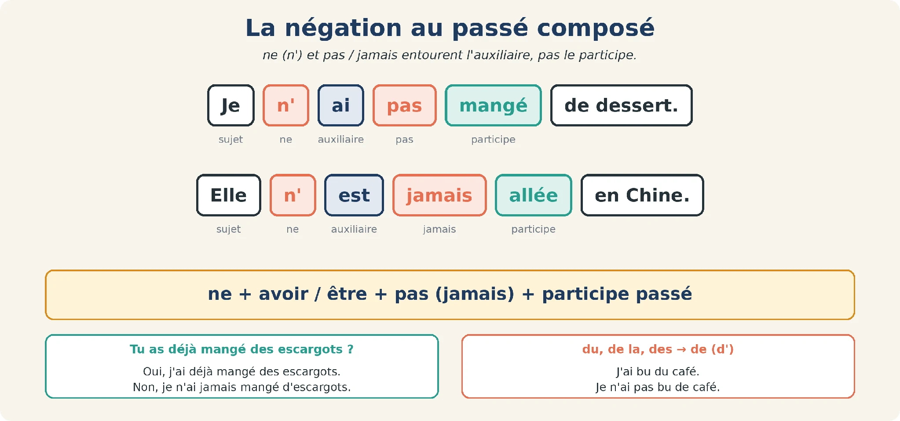
La négation au passé composé
| Affirmatif | Négatif |
|---|---|
| J’ai mangé. | Je n’ai pas mangé. |
| Il est allé au cinéma. | Il n’est pas allé au cinéma. |
| Je me suis levé tôt. | Je ne me suis pas levé tôt. |
| J’ai bu du café. | Je n’ai pas bu de café. |
| Elle est déjà allée en Chine. | Elle n’est jamais allée en Chine. |
| Poser une question | Exemple |
|---|---|
| Intonation ↗ | Tu as aimé le film ? |
| Est-ce que | Est-ce que tu es allé au cinéma ? |
| Mot interrogatif | Qu’est-ce que tu as fait ? · Où est-ce que tu es allé ? |
| À l’oral | Tu es allé où ? · Tu as mangé avec qui ? |
Je retiens
Use esta síntese ao responder: ne… pas para negar e déjà / jamais para falar de experiências. Confira também a mudança de artigo nos exemplos negativos apresentados.
ne + auxiliaire + pas / jamais + participe : Je n’ai pas mangé.
Après la négation : du, de la, des → de : Je n’ai pas bu de café.
Tu as déjà... ? → Oui, j’ai déjà... / Non, je n’ai jamais...
Faça três ações diferentes: negar, perguntar com est-ce que e responder com jamais.
A1–A3: forme négative. B1–B2: question avec est-ce que. C1: réponse avec jamais. Escreva frases completas.
01J’ai mangé.
02Il est allé au cinéma.
03Nous avons vu ce film.
04Tu as mangé ?
05Vous êtes allés au parc ?
06Tu as déjà mangé des escargots ?
Responda no seu ritmo. Depois, confira.
Encore plus
Retome o que aprendeu e amplie seu uso nas próximas atividades.
J’écoute et je lis
O passeio planejado não aconteceu como esperado. Identifique os obstáculos e as ações que não foram realizadas.
Alors, ton week-end à la campagne ?
Horrible ! Nous ne sommes pas partis samedi : la voiture n’a pas démarré.
Oh non !
Nous sommes partis dimanche matin, mais il a plu toute la journée. Nous n’avons pas fait de randonnée, nous n’avons pas vu le lac...
Et vous avez mangé au restaurant, au moins ?
Non, le restaurant n’a pas ouvert ! C’était nul !
Quel dommage !
Reconstrua o fim de semana a partir do que não aconteceu.
Escolha uma resposta em cada item.
01Ils sont partis samedi.
02La voiture n’a pas démarré.
03Dimanche, il a fait beau.
04Ils ont vu le lac.
05Le restaurant n’a pas ouvert.
Responda no seu ritmo. Depois, confira.
À vous d’écrire
Sua reescrita é livre: compare-a com o diálogo e com as explicações dos itens.
Responda primeiro sobre suas experiências. Prepare as perguntas para outra pessoa e escreva quatro frases.
Répondez pour vous, puis posez la question à votre professeur. Écrivez ensuite 4 phrases : Mon professeur a déjà... Je n’ai jamais...
| Tu as déjà... / Vous avez déjà... ? | Moi | Mon professeur |
|---|---|---|
| mangé des escargots ? | ||
| pris l’avion seul(e) ? | ||
| fait du ski ? | ||
| vu un concert dans un stade ? |
| Tu as déjà... / Vous avez déjà... ? | Moi | Mon professeur |
|---|---|---|
| perdu ses clés ? | ||
| chanté au karaoké ? | ||
| raté un train ou un avion ? | ||
| été en France ? |
Seu texto da versão anterior foi preservado. Você pode aproveitá-lo nos novos campos.
Use déjà para experiências vividas e jamais para o que ainda não fez.
No estudo individual, não invente respostas do professor: deixe a coluna para a conversa.
A resposta se refere à experiência da própria pessoa, não a uma resposta prevista pelo sistema. Compare os modelos j’ai déjà… e je n’ai jamais… e confira a posição dessas palavras. As informações sobre o professor dependem da conversa real.
Compare as informações e as formas abaixo com o que você escreveu. Nas partes livres, use-as como apoio, não como uma única resposta possível.
Réponses libres. Modèle : Mon professeur a déjà mangé des escargots. Je n’ai jamais fait de ski.
Esta revisão é sua. O site não atribui nota à produção livre.
J’observe
Você vai organizar uma investigação fictícia. Primeiro leia o relatório e o mapa; depois acrescente o testemunho e compare as declarações.
Le contexte : lundi soir, un vol a eu lieu dans une boulangerie de Lyon. Vous êtes l’assistant(e) de l’inspecteur Durand. Lisez le rapport, observez le plan, écoutez le témoin et trouvez le voleur !
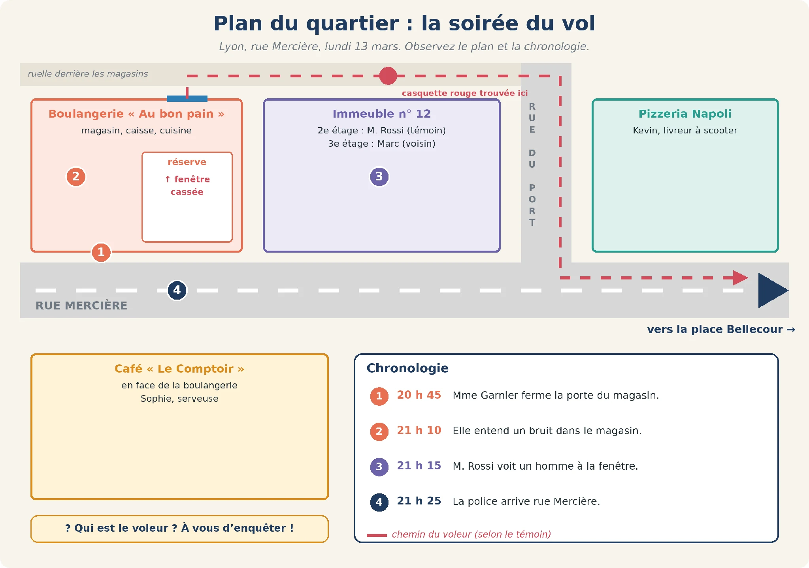
Le plan du quartier et la chronologie de la soirée
Je lis et j’observe
Comece pelos fatos deste relatório. Anote horários, lugares e evidências sem usar ainda o testemunho apresentado mais adiante.
Lyon, mardi 14 mars. Hier soir, un voleur est entré dans la boulangerie « Au bon pain », rue Mercière. À 20 h 45, Mme Garnier, la boulangère, a fermé la porte du magasin. Ensuite, elle est allée dans la cuisine pour préparer le pain du lendemain.
À 21 h 10, elle a entendu un bruit. Elle est revenue dans le magasin et elle a trouvé la caisse ouverte et vide : le voleur a pris 450 euros... et un gâteau au chocolat ! Il est entré et il est sorti par la fenêtre de la réserve, derrière le magasin.
À 21 h 15, un voisin, M. Rossi, a vu un homme dans la ruelle. L’homme est parti en courant vers la rue du Port, puis vers la place Bellecour. Dans la ruelle, il a perdu une casquette rouge. Mme Garnier a appelé la
police et les policiers sont arrivés à 21 h 25. Dans la réserve, ils ont trouvé des traces de chaussures dans la farine : taille 44 !
Document d’enquête
Responda usando apenas o relatório de polícia apresentado antes desta atividade.
Use somente o relatório, sem antecipar as informações do testemunho seguinte.
Escolha uma resposta em cada item.
01Le vol a eu lieu dans un café.
02Mme Garnier a fermé la porte à 20 h 45.
03Le voleur est entré par la porte du magasin.
04Il a pris de l’argent et un gâteau.
05M. Rossi a vu le visage du voleur.
06Le voleur porte des chaussures taille 44.
Responda no seu ritmo. Depois, confira.
À vous d’écrire
Sua reescrita é livre: compare-a com o diálogo e com as explicações dos itens.
Organize as evidências do relatório e do mapa em um pequeno dossiê.
O horário exato do roubo não está estabelecido de forma inequívoca. Diferencie o horário em que o ruído foi ouvido do momento em que o homem foi visto.
Complétez le dossier avec les informations du rapport et du plan.
| Question | Information |
|---|---|
| 📅 Quand ? (jour et heure) | |
| 📍 Où ? (adresse exacte) | |
| 💰 Qu’est-ce que le voleur a pris ? | |
| 🚪 Par où est-il entré et sorti ? | |
| 🏃 Où est-il parti ? | |
| 👁️ Qui l’a vu ? | |
| 🔍 Quels indices a-t-il laissés ? |
Seu texto da versão anterior foi preservado. Você pode aproveitá-lo nos novos campos.
Associe cada informação ao trecho que a sustenta; não invente um horário exato para o roubo.
Separe o que o texto informa do que você apenas deduz.
Um dossiê reúne dados diferentes: local, objetos, trajeto, testemunha e indícios. Não transforme o horário do ruído em certeza sobre a hora exata do roubo. Sua resposta pode registrar a informação disponível e deixar clara essa diferença.
Compare as informações e as formas abaixo com o que você escreveu. Nas partes livres, use-as como apoio, não como uma única resposta possível.
Quand : lundi 13 mars, entre 21 h 10 et 21 h 15
Où : boulangerie « Au bon pain », rue Mercière, Lyon
Quoi : 450 € et un gâteau au chocolat
Par où : la fenêtre de la réserve
Où est-il parti : vers la rue du Port, puis la place Bellecour
Qui l’a vu : M. Rossi, un voisin
Indices : une casquette rouge, des traces de chaussures taille 44 dans la farine.
Esta revisão é sua. O site não atribui nota à produção livre.
Escreva uma frase completa para cada horário da sequência.
Écrivez ce qui s’est passé à chaque heure (phrase complète au passé composé).
| Heure | Qu’est-ce qui s’est passé ? |
|---|---|
| 20 h 45 | |
| 21 h 10 | |
| 21 h 15 | |
| 21 h 25 |
Seu texto da versão anterior foi preservado. Você pode aproveitá-lo nos novos campos.
Use as horas como pontos de referência e identifique a pessoa que age em cada momento.
Mantenha a ordem dos acontecimentos e o passé composé.
Use os horários para reconstruir o relato, não apenas para copiar palavras isoladas. Cada linha deve dizer quem realizou a ação e o que aconteceu naquele momento.
Compare as informações e as formas abaixo com o que você escreveu. Nas partes livres, use-as como apoio, não como uma única resposta possível.
20 h 45 : Mme Garnier a fermé la porte du magasin.
21 h 10 : elle a entendu un bruit (le voleur a pris l’argent).
21 h 15 : M. Rossi a vu un homme dans la ruelle.
21 h 25 : la police est arrivée.
Esta revisão é sua. O site não atribui nota à produção livre.
J’écoute et je lis
Agora há uma nova fonte: Rossi conta o que ouviu e viu. Compare essas informações com o relatório que você já analisou.
Bonsoir, monsieur Rossi. Vous avez vu quelque chose ?
Oui ! J’ai entendu un bruit, alors j’ai regardé par la fenêtre. J’ai vu un homme dans la ruelle.
À quelle heure ?
À 21 h 15. J’ai regardé ma montre.
Comment est cet homme ?
Il est grand et assez fort. Il porte un jean et une veste noire. Je n’ai pas vu son visage.
Et après, qu’est-ce qu’il a fait ?
Il est parti en courant vers la rue du Port. Il a perdu sa casquette, mais il ne s’est pas arrêté !
Il a pris quelque chose avec lui ?
Oui, un sac et... une boîte de gâteau, je pense.
Leia o testemunho de Rossi, identifique os detalhes e registre as formas verbais encontradas.
A consigne pede três formas com être. O conjunto de apoio apresenta duas: registre o que encontrar no testemunho, sem inventar outra ocorrência.
Trois personnes du quartier ont fait une déclaration au commissariat. Lisez et comparez avec le rapport, le plan et le témoignage.
| 🛵 Kevin, 25 ans, livreur | ☕ Sophie, 31 ans, serveuse | 🏠 Marc, 40 ans, voisin |
|---|---|---|
| « Hier soir, j’ai travaillé de 18 h à 23 h à la pizzeria Napoli. J’ai livré des pizzas en scooter. À 21 h, je suis passé rue Mercière, mais je ne me suis pas arrêté. Je n’ai rien vu. » | « J’ai travaillé au café Le Comptoir toute la soirée, jusqu’à minuit. Je ne suis pas sortie. Vers 21 h 15, j’ai vu un homme sans casquette courir dans la rue Mercière, vers la place Bellecour. » | « Je suis rentré du travail à 19 h. J’ai dîné, puis j’ai regardé le match de foot à la télé toute la soirée. Je ne suis pas sorti et je n’ai rien entendu. Je ne mange jamais de gâteau ! » |
Seu texto da versão anterior foi preservado. Você pode aproveitá-lo nos novos campos.
Diferencie o que ele ouviu do que ele viu.
Justifique suas respostas com a fala correspondente; a contagem de verbos com être está em revisão.
No testemunho, Rossi distingue o que ouviu, o que viu e o que não viu. « Je n’ai pas vu son visage » limita sua descrição. Use essas falas para justificar a resposta, sem completar informações por suposição.
Compare as informações e as formas abaixo com o que você escreveu. Nas partes livres, use-as como apoio, não como uma única resposta possível.
1. Parce qu’il a entendu un bruit.
2. Grand et assez fort ; jean et veste noire.
3. Il est parti en courant ; il a perdu sa casquette (il ne s’est pas arrêté).
4. Un sac et une boîte de gâteau.
5. être : est parti, ne s’est pas arrêté ; avoir : ai entendu, ai regardé, ai vu, a fait, a perdu, a pris.
Esta revisão é sua. O site não atribui nota à produção livre.
J’observe
Compare estas observações com o que cada pessoa declarou. Elas ajudam a sustentar sua conclusão, não apenas uma impressão.
Compare as declarações com as evidências. Registre sua conclusão e sustente-a com três indícios.
Complétez le tableau, puis répondez : qui est le voleur ? Donnez 3 indices.
| Suspect | Qu’est-ce qu’il / elle a fait hier soir ? | Indices | Coupable ? |
|---|---|---|---|
| Kevin | |||
| Sophie |
| Suspect | Qu’est-ce qu’il / elle a fait hier soir ? | Indices | Coupable ? |
|---|---|---|---|
| Marc |
Seu texto da versão anterior foi preservado. Você pode aproveitá-lo nos novos campos.
Não escolha apenas pela impressão: confronte horários, testemunhas e objetos.
Sua justificativa deve apontar para os dados apresentados.
Compare os álibis com as notas do inspetor. A conclusão precisa de três indícios apresentados na investigação; uma preferência ou aparência isolada não substitui essa comparação.
Compare as informações e as formas abaixo com o que você escreveu. Nas partes livres, use-as como apoio, não como uma única resposta possível.
Kevin : il a livré des pizzas ; chaussures 41, son patron confirme (non coupable).
Sophie : elle a travaillé au café, elle n’est pas sortie ; chaussures 38, trois clients confirment (non coupable).
Marc est le voleur : 1. il habite à côté de la boulangerie ; 2. ses chaussures (taille 44) sont pleines de farine ; 3. il y a une boîte de gâteau vide chez lui ; 4. il a une casquette rouge ; 5. il dit qu’il ne mange jamais de gâteau et qu’il n’a rien entendu : il ment !
Esta revisão é sua. O site não atribui nota à produção livre.
Je parle
Assuma o papel de Rossi e organize cinco frases sobre o que viu e ouviu. Prepare também as perguntas do inspetor; não acrescente informações que a testemunha não forneceu.
Situation : l’inspecteur Durand interroge M. Rossi, le témoin.
No estudo individual, prepare as falas dos dois papéis. Escolha primeiro um deles, responda em voz alta e depois troque de papel. Na conversa acompanhada, use essas anotações como apoio.
Boîte à outils : J’ai entendu... · J’ai regardé par la fenêtre · J’ai vu un homme · Il est parti en courant · Il a perdu sa casquette · Je n’ai pas vu son visage
🔄 Puis inversez les rôles : vous jouez B et votre professeur joue A.
Je parle
Agora mude o ponto de vista: escreva seis frases como Mme Garnier. Use os acontecimentos do relatório e mantenha os horários e a ordem do relato.
Écrivez la déclaration de Mme Garnier (6 phrases) : Hier soir, j’ai fermé la porte à 20 h 45. Ensuite, je suis allée...
Relisez votre préparation, puis essayez de la dire à voix haute sans lire. Reprenez une phrase si elle n’est pas encore claire.
Imagine a pergunta que levaria a cada resposta.
Posez la question avec un mot interrogatif.
Seu texto da versão anterior foi preservado. Você pode aproveitá-lo nos novos campos.
Identifique se a informação é lugar, companhia, horário, ação, data ou transporte.
Há outras formulações possíveis; use a comparação para revisar o sentido e a construção.
O tipo de informação na resposta orienta a pergunta: um lugar pede où; uma companhia, avec qui; um horário, à quelle heure; uma maneira de viajar, comment. Depois confira a construção com o auxiliar.
Compare as informações e as formas abaixo com o que você escreveu. Nas partes livres, use-as como apoio, não como uma única resposta possível.
1. Où est-ce que tu es allé ?
2. Avec qui est-ce que tu as mangé ?
3. À quelle heure est-ce que vous êtes partis ?
4. Qu’est-ce que tu as vu ?
5. Quand est-ce qu’elle est arrivée ?
6. Comment est-ce qu’ils sont venus ?
Esta revisão é sua. O site não atribui nota à produção livre.
Responda negativamente mantendo a pessoa e o sentido da pergunta.
Seu texto da versão anterior foi preservado. Você pode aproveitá-lo nos novos campos.
Observe já/jamais e a posição de ne…pas em relação ao auxiliar.
Releia a resposta como uma fala completa.
Na resposta negativa, preserve a informação perguntada e ajuste quem responde. Observe a diferença entre uma ação de ontem e uma experiência com déjà / jamais; os exemplos mostram as duas situações.
Compare as informações e as formas abaixo com o que você escreveu. Nas partes livres, use-as como apoio, não como uma única resposta possível.
1. Non, je n’ai jamais vu la mer.
2. Non, nous ne sommes pas sortis hier soir.
3. Non, je n’ai pas bu de café ce matin.
4. Non, elle ne s’est pas levée tôt.
5. Non, ils n’ont pas acheté de fruits.
6. Non, je ne suis jamais monté(e) à la tour Eiffel.
Esta revisão é sua. O site não atribui nota à produção livre.
Je parle
Você perdeu a bolsa na estação. Prepare a sequência do trajeto e a descrição do conteúdo; depois formule as perguntas que o atendimento precisa fazer.
Situation : vous avez perdu votre sac hier à la gare. Votre professeur travaille au bureau des objets trouvés.
No estudo individual, prepare as falas dos dois papéis. Escolha primeiro um deles, responda em voz alta e depois troque de papel. Na conversa acompanhada, use essas anotações como apoio.
Boîte à outils : Qu’est-ce que vous avez perdu ? · Je suis allé(e)... · J’ai oublié... · Je n’ai pas vu...
🔄 Puis inversez les rôles : vous jouez B et votre professeur joue A.
Je parle
Pense nas suas experiências: escreva cinco coisas que nunca fez e três que já fez. Releia a posição de jamais e de déjà nas suas frases.
Écrivez 5 choses que vous n’avez jamais faites et 3 choses que vous avez déjà faites.
Relisez votre préparation, puis essayez de la dire à voix haute sans lire. Reprenez une phrase si elle n’est pas encore claire.
Je fais le point
Marque o que você já consegue fazer e retome os pontos que ainda precisam de treino. Esta é uma autoavaliação.
Seu trabalho
Salve neste navegador ou baixe uma cópia. Não há envio automático ao professor.
Salve suas respostas antes de fechar.
Continuidade
Mon week-end : raconter dans l’ordre
Unité 10 · Missão 6 de 7
Organize o relato do fim de semana e reaja à conversa.
La situation
Lundi matin, à la machine à café, vos collègues parlent de leur week-end. À vous de raconter le vôtre !
Você já conhece as formas verbais. O desafio agora é conectar as ações, situá-las no tempo e reagir ao relato de outra pessoa.
J’observe
Escolha uma das três fotos — montanha, mar ou cidade — e imagine o fim de semana das pessoas. Prepare uma ação e uma opinião antes de ouvir o diálogo.
Choisissez une photo : qu’est-ce que ces personnes ont fait ce week-end ?
J’écoute et je lis
A conversa resume um fim de semana na montanha. Ouça como os organizadores conectam chegada, passeio, refeição e retorno.
Alors, ce week-end à la montagne ?
C’était super ! D’abord, nous sommes arrivés vendredi soir. Ensuite, samedi, nous avons fait une randonnée. Dimanche, nous avons mangé dans un chalet, puis nous sommes rentrés.
Quelle chance !
Organize os cartões para reconstruir a sequência do relato. Use as setas para mover cada frase.
Remettez les quatre phrases dans l’ordre. Déplacez chaque carte avec les flèches.
Ensuite, nous avons fait une randonnée.
D’abord, nous sommes arrivés vendredi.
Enfin, nous sommes rentrés dimanche.
Puis nous avons mangé dans un chalet.
Responda no seu ritmo. Depois, confira.
Je retiens
Você já reconheceu a ordem do relato. Agora use o quadro para escolher expressões de sequência, momento, opinião e reação.
| Pour... | J’utilise... |
|---|---|
| Ordonner | d’abord → ensuite / puis / après → enfin |
| Situer | samedi matin, dimanche soir, le matin, l’après-midi, le soir |
| Donner mon avis | C’était super / bien / génial / intéressant / long / fatigant / nul. |
| Réagir | Ah bon ? · Super ! · Quelle chance ! · Dommage ! · C’est vrai ? |
Je retiens
Compare a estrutura do relato com a expressão de opinião. Ao revisar seu texto, procure a sequência dos acontecimentos e uma frase com c’était.
C’était + adjectif pour donner son avis. L’adjectif ne change pas : La soirée ? C’était génial !
Structure du récit : d’abord → ensuite / puis → enfin → avis.
Encore plus
Retome o que aprendeu e amplie seu uso nas próximas atividades.
Je parle
É segunda-feira e dois colegas retomam o contato. Prepare a saudação, as perguntas sobre sábado e domingo e as reações ao relato do outro.
Situation : vous et votre professeur jouez deux collègues qui se retrouvent le lundi matin et parlent de leur week-end.
No estudo individual, prepare as falas dos dois papéis. Escolha primeiro um deles, responda em voz alta e depois troque de papel. Na conversa acompanhada, use essas anotações como apoio.
Boîte à outils : Tu as passé un bon week-end ? · Samedi, j’ai... · Dimanche, je suis... · Et toi ? · Ce soir, je vais...
🔄 Puis inversez les rôles : vous jouez B et votre professeur joue A.
J’observe
Sofia e Inès conversam por mensagens. Observe como alternam relato, pergunta e reação.
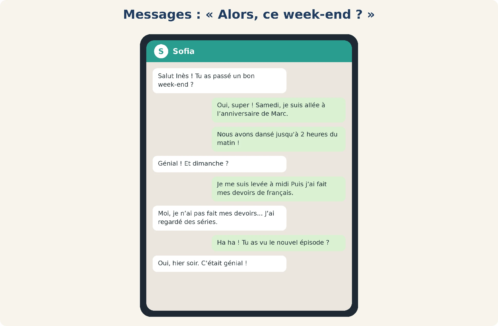
Sofia : Salut Inès ! Tu as passé un bon week-end ?
Inès : Oui, super ! Samedi, je suis allée à l’anniversaire de Marc.
Inès : Nous avons dansé jusqu’à 2 heures du matin !
Sofia : Génial ! Et dimanche ?
Inès : Je me suis levée à midi Puis j’ai fait mes devoirs de français.
Sofia : Moi, je n’ai pas fait mes devoirs… J’ai regardé des séries.
Inès : Ha ha ! Tu as vu le nouvel épisode ?
Sofia : Oui, hier soir. C’était génial !
Conversation entre Sofia et Inès : raconter son week-end par écrit
Leia a conversa de Sofia e Inès, responda às perguntas e escreva uma troca de oito mensagens.
Production : avec votre professeur, écrivez dans le chat votre propre conversation (8 messages) sur votre week-end, avec au moins un avis et deux réactions.
Seu texto da versão anterior foi preservado. Você pode aproveitá-lo nos novos campos.
Observe as atividades do sábado e o que cada pessoa fez no domingo.
Na sua conversa, inclua um comentário de opinião e duas reações.
Separe as informações da história das reações à conversa. Ao criar seus oito messages, não basta enumerar ações: inclua uma opinião e pelo menos duas reações, como solicitado.
Compare as informações e as formas abaixo com o que você escreveu. Nas partes livres, use-as como apoio, não como uma única resposta possível.
1. À l’anniversaire de Marc.
2. Jusqu’à 2 heures du matin.
3. À midi.
4. Sofia ; elle a regardé des séries.
5. C’était génial.
Esta revisão é sua. O site não atribui nota à produção livre.
J’écoute et je lis
Dois colegas contam experiências diferentes. Além das ações, observe as expressões de opinião e de reação.
Tu as fait quoi, ce week-end ?
Je suis allée à un concert de jazz !
Ah bon ? Super ! C’était comment ?
C’était génial ! D’abord, nous avons dîné près de la salle. Ensuite, nous avons écouté le concert pendant deux heures. Enfin, nous avons pris un dernier verre sur une terrasse.
Quelle chance ! Moi, je suis resté à la maison, j’ai été malade.
Oh, dommage ! Tu vas mieux ?
Remarque : Tu as fait quoi ? est la question orale familière ; Qu’est-ce que tu as fait ? est la forme standard.
Complete o relato com organizadores e formas no passado.
Complétez avec d’abord, ensuite, puis, enfin et conjuguez les verbes.
Seu texto da versão anterior foi preservado. Você pode aproveitá-lo nos novos campos.
D’abord abre a sequência; ensuite e puis conectam; enfin encerra.
Releia o texto como uma história; confira também os auxiliares e os particípios.
Os organizadores conectam ações, enquanto os verbos precisam do auxiliar e do particípio. Confira primeiro a sequência inteira e depois cada grupo verbal, observando o início com nous nous sommes levés.
Compare as informações e as formas abaixo com o que você escreveu. Nas partes livres, use-as como apoio, não como uma única resposta possível.
nous nous sommes levés
D’abord, nous avons pris
Ensuite, nous sommes partis
Puis nous avons nagé, nous avons joué
Enfin, nous sommes rentrés.
Esta revisão é sua. O site não atribui nota à produção livre.
Escolha uma reação para cada fala e pense no efeito que ela produz na conversa.
Seu texto da versão anterior foi preservado. Você pode aproveitá-lo nos novos campos.
Mais de uma reação pode fazer sentido. Compare o exemplo, sem tratar uma escolha diferente como erro automático.
A reação expressa como você responde ao acontecimento. Uma notícia boa permite entusiasmo; uma perda pede uma reação compatível. Os modelos orientam essa relação, mas outras escolhas podem ser justificadas no contexto.
Compare as informações e as formas abaixo com o que você escreveu. Nas partes livres, use-as como apoio, não como uma única resposta possível.
1. Quelle chance !
2. Dommage !
3. Ah bon ?
4. Super ! (plusieurs réponses possibles).
Esta revisão é sua. O site não atribui nota à produção livre.
Je parle
Escolha as perguntas para contar seu fim de semana. Prepare respostas completas e duas reações que possam manter a conversa, além de uma pergunta para continuar o assunto.
Consigne de réaction : l’auditeur doit utiliser au moins deux réactions (Ah bon ? Super !) et une question de relance.
Relisez votre préparation, puis essayez de la dire à voix haute sans lire. Reprenez une phrase si elle n’est pas encore claire.
Je parle
Compare um fim de semana ótimo com outro desastroso. Use os acontecimentos de cada papel, organize a sequência e prepare uma reação ao relato do colega.
Situation : deux amis comparent leur week-end. A a passé un week-end génial ; B, un week-end catastrophe.
No estudo individual, prepare as falas dos dois papéis. Escolha primeiro um deles, responda em voz alta e depois troque de papel. Na conversa acompanhada, use essas anotações como apoio.
Boîte à outils : C’était génial / nul · Quelle chance ! · Oh non ! · Dommage ! · Et après, qu’est-ce que tu as fait ?
🔄 Puis inversez les rôles : vous jouez B et votre professeur joue A.
Je parle
Prepare um recado de aproximadamente um minuto para quem não foi à festa. Inclua participantes, atividades, comida, horário de retorno e sua opinião. Você pode ensaiar sem gravar; o site não usa microfone.
Situation : votre ami(e) n’était pas à la fête samedi. Vous lui laissez un message vocal d’une minute pour raconter.
No estudo individual, prepare as falas dos dois papéis. Escolha primeiro um deles, responda em voz alta e depois troque de papel. Na conversa acompanhada, use essas anotações como apoio.
Boîte à outils : Salut, c’est... ! Samedi, la fête... · Marc est venu avec... · Nous avons dansé... · Je suis rentré(e) à... · C’était super ! Bisous !
🔄 Puis inversez les rôles : vous jouez B et votre professeur joue A.
Je parle
Produza oito frases sobre seu último fim de semana. Na revisão, localize três organizadores, uma frase negativa e uma opinião.
Racontez votre dernier week-end en 8 phrases : 3 organisateurs, 1 négation, 1 avis.
Relisez votre préparation, puis essayez de la dire à voix haute sans lire. Reprenez une phrase si elle n’est pas encore claire.
Je fais le point
Marque o que você já consegue fazer e retome os pontos que ainda precisam de treino. Esta é uma autoavaliação.
Seu trabalho
Salve neste navegador ou baixe uma cópia. Não há envio automático ao professor.
Salve suas respostas antes de fechar.
Continuidade
Mon plus beau souvenir : la grande finale
Unité 10 · Missão 7 de 7
Conte uma lembrança, faça o teste e prepare a produção final.
La situation
Vous racontez votre plus beau souvenir à votre professeur, puis vous faites le bilan de l’unité.
Reúna o que praticou: escolha um acontecimento, organize o relato e prepare sua produção oral e escrita. As listas de revisão ajudam você a conferir seu próprio texto.
J’observe
Uma imagem pode iniciar um relato. Use a foto da universidade como ponto de partida para preparar dez perguntas; pense também em uma imagem que represente seu próprio souvenir.
Escolha uma foto no seu dispositivo para orientar seu relato. A imagem não precisa ser enviada para realizar a preparação.
Posez 10 questions à votre professeur : Vous avez étudié à Liège ? Quand est-ce que vous êtes arrivé(e) ? Combien de temps vous êtes resté(e) ? C’était comment ?
Lance o dado, acompanhe sua posição e responda ao desafio da casa.
Départ · case 1
Você confirma a revisão. As casas de ação são automáticas; as respostas orais e livres não recebem avaliação automática. Em dupla, alternem as jogadas.
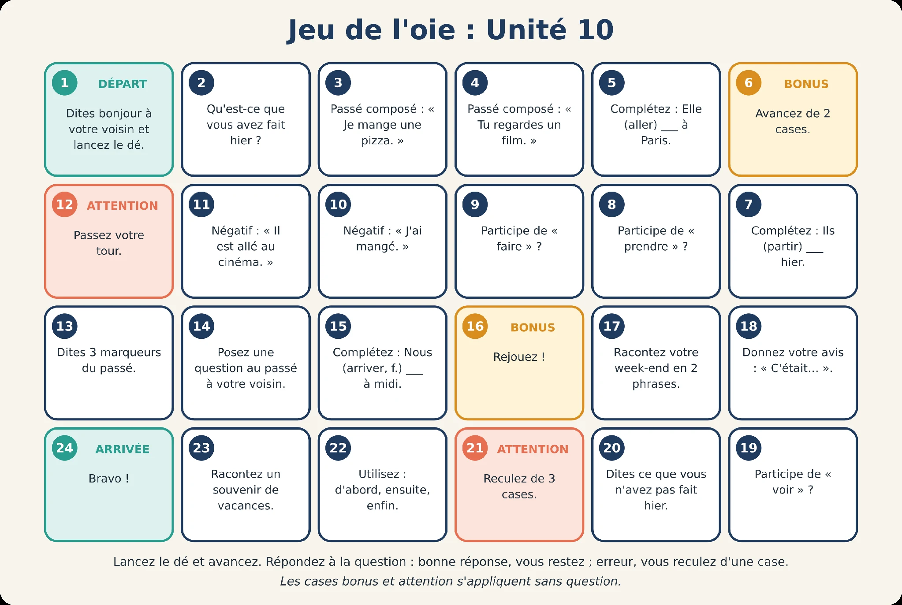
1. DÉPART : Dites bonjour à votre voisin et lancez le dé.
2. Qu’est-ce que vous avez fait hier ?
3. Passé composé : « Je mange une pizza. »
4. Passé composé : « Tu regardes un film. »
5. Complétez : Elle (aller) ___ à Paris.
6. BONUS : Avancez de 2 cases.
7. Complétez : Ils (partir) ___ hier.
8. Participe de « prendre » ?
9. Participe de « faire » ?
10. Négatif : « J’ai mangé. »
11. Négatif : « Il est allé au cinéma. »
12. ATTENTION : Passez votre tour.
13. Dites 3 marqueurs du passé.
14. Posez une question au passé à votre voisin.
15. Complétez : Nous (arriver, f.) ___ à midi.
16. BONUS : Rejouez !
17. Racontez votre week-end en 2 phrases.
18. Donnez votre avis : « C’était… ».
19. Participe de « voir » ?
20. Dites ce que vous n’avez pas fait hier.
21. ATTENTION : Reculez de 3 cases.
22. Utilisez : d’abord, ensuite, enfin.
23. Racontez un souvenir de vacances.
24. ARRIVÉE : Bravo !
Lancez le dé et avancez. Répondez à la question : bonne réponse, vous restez ; erreur, vous reculez d’une case. Les cases bonus et attention s’appliquent sans question.
Je parle
Escolha um personagem e use as informações do cartão para contar o fim de semana em pelo menos cinco frases.
Choisissez une carte et racontez le week-end du personnage au passé composé (au moins 5 phrases). Votre professeur vous pose ensuite 3 questions.
Samedi : cinéma avec des amis Dimanche : déjeuner chez ses parents Avis : c’était super Verbes : aller, voir, manger « Samedi, je suis allée... »
Samedi : match de football Dimanche : ménage et courses Avis : c’était long Verbes : jouer, faire, acheter « Samedi, j’ai joué... »
Samedi : randonnée en montagne Dimanche : repos à la maison Avis : c’était fatigant Verbes : partir, marcher, rester « Samedi, je suis parti... »
Samedi : shopping en ville Dimanche : musée avec sa sœur Avis : c’était génial Verbes : acheter, visiter, prendre « Samedi, j’ai acheté... »
Samedi : anniversaire d’une amie Dimanche : travail à la maison Avis : c’était bien Verbes : fêter, danser, travailler « Samedi soir, j’ai dansé... »
Samedi : jeux vidéo toute la journée Dimanche : train pour Bordeaux Avis : c’était cool Verbes : jouer, prendre, arriver « Dimanche, j’ai pris... »
Relisez votre préparation, puis essayez de la dire à voix haute sans lire. Reprenez une phrase si elle n’est pas encore claire.
Je parle
Sua produção final reúne o percurso: prepare o relato, ensaie em voz alta e escreva uma mensagem sobre a mesma experiência.
Racontez votre dernier week-end ou un souvenir à votre professeur, en 8 phrases au moins. Il vous pose trois questions. Puis écrivez un message à un ami pour raconter la même expérience.
💡 Exemple
Le week-end dernier, je suis allée à la mer avec mes amis. D’abord, samedi matin, nous avons pris le train. Ensuite, nous sommes arrivés à l’hôtel et nous avons nagé. Le soir, nous avons mangé au restaurant. Enfin, dimanche, nous sommes rentrés. C’était super !
Relisez votre préparation, puis essayez de la dire à voix haute sans lire. Reprenez une phrase si elle n’est pas encore claire.
Retome a passagem do presente para o passé composé sem mudar a pessoa verbal.
Escreva a frase completa no passé composé. Treino de 4 itens; não é nota oficial.
01Je regarde un film.
02Tu manges une pizza.
03Nous prenons le train.
04Ils font du sport.
Responda no seu ritmo. Depois, confira.
Complete com être e observe quem realiza a ação.
Digite somente a forma que completa a lacuna, com os acentos.
01Elle (aller) ___ à Paris.
02Ils (partir) ___ hier.
03Nous (rester – des filles) ___ à la maison.
04Je (arriver – un homme) ___ tard.
Responda no seu ritmo. Depois, confira.
Transforme cada frase em negativa.
Escreva a frase completa na forma negativa.
01J’ai mangé.
02Il est allé au parc.
03Nous avons vu ce film.
04Elle a pris le bus.
Responda no seu ritmo. Depois, confira.
Use a data fixa de referência: aujourd’hui, c’est le 20 mai.
Aujourd’hui, c’est le 20 mai.
Aujourd’hui, c’est le 20 mai. Écrivez le marqueur de temps.
01le 19 mai
02le 17 mai
03en avril
04le 18 mai
Responda no seu ritmo. Depois, confira.
Conte seu dia de ontem em quatro frases.
Escolha quatro ações e organize-as de forma compreensível.
Revise auxiliares, particípios e sentido; esta produção não recebe correção automática.
Suas quatro frases devem contar o que aconteceu ontem. Procure o sujeito e o grupo verbal em cada uma; depois leia o conjunto para verificar se a experiência é compreensível. Não há conteúdo pessoal correto ou incorreto previamente cadastrado.
Esta revisão é sua. O site não atribui nota à produção livre.
Encore plus
Retome o que aprendeu e amplie seu uso nas próximas atividades.
J’observe
Amplie o treino em situações de produção escrita e oral. Escolha a proposta, observe o destinatário e respeite o tamanho pedido.
| Épreuve | Sujet |
|---|---|
| Production écrite 1 | Vous avez passé le week-end chez un ami à la campagne. Vous écrivez un message à un(e) collègue pour raconter : ce que vous avez fait, avec qui, votre avis (40 à 50 mots). |
| Épreuve | Sujet |
|---|---|
| Production écrite 2 | Vous êtes en vacances. Vous écrivez une carte postale à votre famille : où vous êtes allé(e), ce que vous avez visité, mangé, et ce que vous n’avez pas aimé (40 à 50 mots). |
| Production écrite 3 | Un ami vous demande : « Qu’est-ce que tu as fait pour ton anniversaire ? » Répondez à son courriel (40 à 50 mots). |
| Production orale : entretien | Parlez de votre dernier week-end. Qu’est-ce que vous avez fait ? Avec qui ? C’était comment ? |
| Production orale : échange | Avec les mots-cartes Hier ? · Week-end ? · Vacances ? · Déjà ? · Film ? · Restaurant ?, posez des questions à l’examinateur au passé composé. |
| Production orale : dialogue | Vous rentrez de voyage. Un ami vous pose des questions sur le voyage (transport, logement, activités, avis). Jouez la scène. |
Je fais le point
Marque o que você já consegue fazer e retome os pontos que ainda precisam de treino. Esta é uma autoavaliação.
Seu trabalho
Salve neste navegador ou baixe uma cópia. Não há envio automático ao professor.
Salve suas respostas antes de fechar.
Continuidade
Mission bonus A · Ils racontent un événement
Unité 10 · Bônus A
Explore oito personagens, suas experiências e os documentos de Clémence.
La situation
Huit personnages racontent un événement : anniversaire, voyage, fête, concert, cinéma, travail, mariage, sport.
Observe cada pessoa, leia seu relato, organize as informações e conte a história em terceira pessoa. Depois, use os mesmos apoios para falar de uma experiência sua.
J’observe
Você vai acompanhar oito relatos. Primeiro observe e faça hipóteses; depois leia, organize as informações e reconte. As experiências dos personagens servem de apoio para conversar sobre as suas.
Huit personnages racontent un événement : anniversaire, voyage, fête, concert, cinéma, travail, mariage, sport. Chaque fiche propose un récit à lire, une photo à observer, une grille d’analyse et des activités pour raconter et échanger.
| 1. Observer | 2. Analyser | 3. Restituer | 4. Échanger |
|---|---|---|---|
| Regarder l’image et la photo : Qui ? Où ? Quel événement ? Faire des hypothèses avant de lire. | Lire la bulle, compléter la grille, classer les verbes avoir / être, repérer les marqueurs de temps. | Raconter à la 3e personne sans le texte ; résumer en 3 phrases ; écrire le récit d’un ami du personnage. | Interviewer le personnage (jeu de rôle) ; répondre à « Et vous ? » ; comparer avec un autre personnage. |
Observe as fotos e registre uma hipótese de evento para cada personagem. Depois, leia os relatos e compare.
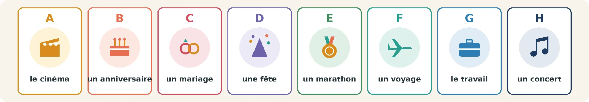
A : cinéma. B : anniversaire. C : mariage. D : fête. E : marathon. F : voyage. G : travail. H : concert.
Seu texto da versão anterior foi preservado. Você pode aproveitá-lo nos novos campos.
Uma hipótese inicial pode mudar depois da leitura.
As fotos servem para formular hipóteses, não para confirmar automaticamente idade, profissão ou acontecimento. É a leitura dos relatos que permite verificar as associações e revisar a primeira ideia.
Compare as informações e as formas abaixo com o que você escreveu. Nas partes livres, use-as como apoio, não como uma única resposta possível.
1 Amina
B (anniversaire) · 2 Pierre
F (voyage) · 3 Lucie
D (fête) · 4 Samuel
H (concert) · 5 Mei
A (cinéma) · 6 Rachid
G (travail) · 7 Gabrielle
C (mariage) · 8 Diego
E (marathon).
Esta revisão é sua. O site não atribui nota à produção livre.
Je lis et j’observe
Amina conta uma surpresa de aniversário. Compare o que ela esperava ao voltar para casa com o que os amigos e a irmã fizeram. Depois organize as informações na ficha.
💬 « Samedi dernier, j’ai fêté mes 28 ans. Le matin, j’ai travaillé à l’hôpital. Le soir, je suis rentrée à la maison et... surprise ! Mes amis sont venus avec un gros gâteau au chocolat. Nous avons mangé, nous avons dansé et j’ai ouvert mes cadeaux. Ma sœur est arrivée de Lyon à minuit ! Je me suis couchée à 3 heures. C’était le plus bel anniversaire de ma vie ! »
Mots-clés : fêter · un cadeau · une surprise
🔍 Grille d’analyse
Qu’est-ce que elle a fait ?
Depois de analisar o relato, avance para compreender, recontar e conversar sobre sua própria experiência.
Observe a foto, leia o relato e organize as informações antes de responder. Depois, reconte em terceira pessoa e relacione a uma experiência sua.
Seu texto da versão anterior foi preservado. Você pode aproveitá-lo nos novos campos.
Use quem, quando, onde, com quem e o que aconteceu como pistas de leitura.
Diferencie localizar uma informação, analisar os verbos e criar seu próprio relato. As duas últimas produções não têm resposta única.
Amina passa de je para nous quando inclui os amigos nas ações. Ao recontar em terceira pessoa, mantenha quem participou de cada acontecimento e não atribua todas as ações apenas a ela.
Compare as informações e as formas abaixo com o que você escreveu. Nas partes livres, use-as como apoio, não como uma única resposta possível.
Elle a 28 ans ; elle a travaillé à l’hôpital.
Ses amis sont venus avec un gâteau au chocolat.
Sa sœur est arrivée de Lyon.
Verbes : avoir : ai fêté, ai travaillé, avons mangé, avons dansé, ai ouvert · être : suis rentrée, sont venus, est arrivée, me suis couchée.
Esta revisão é sua. O site não atribui nota à produção livre.
Je lis et j’observe
Pierre relata uma viagem ao Japão. Observe com quem viajou, quanto tempo ficou e quais atividades foram feitas pelo casal ou apenas por ele.
💬 « L’été dernier, je suis parti au Japon avec ma femme. Nous avons pris l’avion à Paris et nous sommes arrivés à Tokyo quatorze heures après. Nous sommes restés deux semaines. Nous avons visité des temples, nous avons pris le train rapide et nous avons mangé des sushis tous les jours ! Je suis monté au mont Fuji ; ma femme n’est pas montée, elle est restée à l’hôtel. C’était un voyage extraordinaire. »
Mots-clés : un temple · visiter · rester
🔍 Grille d’analyse
Qu’est-ce que il a fait ?
rapide
Depois de analisar o relato, avance para compreender, recontar e conversar sobre sua própria experiência.
Observe a foto, leia o relato e organize as informações antes de responder. Depois, reconte em terceira pessoa e relacione a uma experiência sua.
Seu texto da versão anterior foi preservado. Você pode aproveitá-lo nos novos campos.
Use quem, quando, onde, com quem e o que aconteceu como pistas de leitura.
Diferencie localizar uma informação, analisar os verbos e criar seu próprio relato. As duas últimas produções não têm resposta única.
Pierre distingue as ações do casal e da esposa. Montée e restée se referem a ma femme, por isso recebem a marca feminina nos exemplos do relato.
Compare as informações e as formas abaixo com o que você escreveu. Nas partes livres, use-as como apoio, não como uma única resposta possível.
Avec sa femme ; deux semaines.
Ils ont visité des temples, pris le train rapide, mangé des sushis.
Le sujet est ma femme (féminin).
Verbes : avoir : avons pris (×2), avons visité, avons mangé · être : suis parti, sommes arrivés, sommes restés, suis monté, n’est pas montée, est restée.
Esta revisão é sua. O site não atribui nota à produção livre.
Je lis et j’observe
Lucie conta a festa de fim dos exames. Identifique como o grupo preparou a festa e a reação dos vizinhos; depois reconte a sequência.
💬 « Vendredi soir, nous avons organisé une fête pour la fin des examens. Nous avons invité trente personnes ! J’ai préparé des pizzas et Julien a apporté la musique. Nous avons dansé jusqu’à 4 heures du matin. Les voisins n’ont pas aimé : ils sont venus deux fois ! Le lendemain, nous avons tout rangé. C’était fatigant, mais très drôle. »
Mots-clés : organiser · inviter · ranger
🔍 Grille d’analyse
Qu’est-ce que elle a fait ?
Depois de analisar o relato, avance para compreender, recontar e conversar sobre sua própria experiência.
Observe a foto, leia o relato e organize as informações antes de responder. Depois, reconte em terceira pessoa e relacione a uma experiência sua.
Seu texto da versão anterior foi preservado. Você pode aproveitá-lo nos novos campos.
Use quem, quando, onde, com quem e o que aconteceu como pistas de leitura.
Diferencie localizar uma informação, analisar os verbos e criar seu próprio relato. As duas últimas produções não têm resposta única.
O texto informa que os vizinhos não gostaram e vieram duas vezes. Relacionar isso ao barulho da festa é uma dedução de contexto; diferencie-a das informações explicitamente narradas.
Compare as informações e as formas abaixo com o que você escreveu. Nas partes livres, use-as como apoio, não como uma única resposta possível.
Pour la fin des examens.
Lucie a préparé les pizzas, Julien a apporté la musique.
Parce qu’ils n’ont pas aimé le bruit (déduction).
Verbes : avoir : avons organisé, avons invité, ai préparé, a apporté, avons dansé, n’ont pas aimé, avons rangé · être : sont venus.
Esta revisão é sua. O site não atribui nota à produção livre.
Je lis et j’observe
Samuel recorda um concerto especial. Observe a compra dos ingressos, a viagem, os horários e a dificuldade depois do espetáculo.
💬 « Le mois dernier, je suis allé au concert de mon groupe préféré, à Paris. J’ai acheté les billets il y a six mois ! Je suis parti de Lille en train avec mon frère. Nous sommes arrivés à la salle à 18 heures. Le concert a commencé à 21 heures et il a duré trois heures. Nous avons chanté toutes les chansons. Après, nous n’avons pas trouvé de taxi : nous sommes rentrés à pied à l’hôtel ! C’était inoubliable. »
Mots-clés : un billet · chanter · durer
🔍 Grille d’analyse
Qu’est-ce que il a fait ?
Depois de analisar o relato, avance para compreender, recontar e conversar sobre sua própria experiência.
Observe a foto, leia o relato e organize as informações antes de responder. Depois, reconte em terceira pessoa e relacione a uma experiência sua.
Seu texto da versão anterior foi preservado. Você pode aproveitá-lo nos novos campos.
Use quem, quando, onde, com quem e o que aconteceu como pistas de leitura.
Diferencie localizar uma informação, analisar os verbos e criar seu próprio relato. As duas últimas produções não têm resposta única.
A compra dos ingressos aconteceu seis meses antes; a ida ao concerto foi no mês anterior. Separe esses dois momentos e observe a volta a pé depois do espetáculo.
Compare as informações e as formas abaixo com o que você escreveu. Nas partes livres, use-as como apoio, não como uma única resposta possível.
Il y a six mois.
Avec son frère, en train.
Trois heures ; ils sont rentrés à pied.
Verbes : avoir : ai acheté, a commencé, a duré, avons chanté, n’avons pas trouvé · être : suis allé, suis parti, sommes arrivés, sommes rentrés.
Esta revisão é sua. O site não atribui nota à produção livre.
Je lis et j’observe
Mei conta uma ida ao cinema. Compare a reação dela com a da amiga e identifique o que fizeram depois do filme.
💬 « Hier soir, je suis allée au cinéma avec une amie. Nous avons vu une comédie française. D’abord, nous avons acheté du pop-corn. Le film a commencé à 20 h 30. J’ai beaucoup ri ! Mon amie, elle, n’a pas aimé : elle s’est endormie au milieu du film. Après, nous avons bu un thé dans un café et nous avons parlé du film. C’était sympa. »
Mots-clés : une comédie · rire · s’endormir
🔍 Grille d’analyse
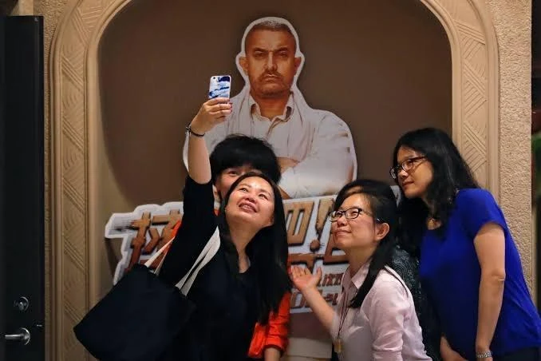
Qu’est-ce que elle a fait ?
Depois de analisar o relato, avance para compreender, recontar e conversar sobre sua própria experiência.
Observe a foto, leia o relato e organize as informações antes de responder. Depois, reconte em terceira pessoa e relacione a uma experiência sua.
Seu texto da versão anterior foi preservado. Você pode aproveitá-lo nos novos campos.
Use quem, quando, onde, com quem e o que aconteceu como pistas de leitura.
Diferencie localizar uma informação, analisar os verbos e criar seu próprio relato. As duas últimas produções não têm resposta única.
Mei gostou do filme, mas a amiga adormeceu. Ao recontar, preserve a diferença entre as duas experiências e a ação compartilhada depois do cinema.
Compare as informações e as formas abaixo com o que você escreveu. Nas partes livres, use-as como apoio, não como uma única resposta possível.
Une comédie française, à 20 h 30.
Non, elle s’est endormie.
Elles ont bu un thé et parlé du film.
Verbes : avoir : avons vu, avons acheté, a commencé, ai ri, n’a pas aimé, avons bu, avons parlé · être : suis allée, s’est endormie.
Esta revisão é sua. O site não atribui nota à produção livre.
Je lis et j’observe
Rachid relata um dia de trabalho difícil. Acompanhe o atraso, a reunião e o resultado que muda a avaliação do dia.
💬 « Lundi, j’ai eu une journée très difficile. Je me suis levé à 5 heures et j’ai pris l’avion pour Bruxelles. L’avion est parti en retard. Je suis arrivé à la réunion à 10 h 30, avec une heure de retard ! J’ai présenté notre projet à des clients. Ils ont posé beaucoup de questions. À midi, je n’ai pas mangé. Je suis rentré à 22 heures, mais... les clients ont signé le contrat ! C’était long, mais c’était une bonne journée. »
Mots-clés : une réunion · présenter · signer
🔍 Grille d’analyse
Qu’est-ce que il a fait ?
l’aéroport
Depois de analisar o relato, avance para compreender, recontar e conversar sobre sua própria experiência.
Observe a foto, leia o relato e organize as informações antes de responder. Depois, reconte em terceira pessoa e relacione a uma experiência sua.
Seu texto da versão anterior foi preservado. Você pode aproveitá-lo nos novos campos.
Use quem, quando, onde, com quem e o que aconteceu como pistas de leitura.
Diferencie localizar uma informação, analisar os verbos e criar seu próprio relato. As duas últimas produções não têm resposta única.
O atraso torna o início do dia difícil, mas a assinatura do contrato muda o resultado. Uma boa síntese mantém esse contraste, em vez de listar apenas os problemas.
Compare as informações e as formas abaixo com o que você escreveu. Nas partes livres, use-as como apoio, não como uma única resposta possível.
Parce que l’avion est parti en retard.
Il a présenté le projet ; les clients ont posé des questions.
Les clients ont signé le contrat.
Verbes : avoir : ai eu, ai pris, ai présenté, ont posé, n’ai pas mangé, ont signé · être : me suis levé, est parti, suis arrivé, suis rentré.
Esta revisão é sua. O site não atribui nota à produção livre.
Je lis et j’observe
Gabrielle recorda o casamento da neta. Localize os participantes, os lugares e a lembrança que torna essa experiência emocionante para ela.
💬 « Il y a deux semaines, ma petite-fille Chloé s’est mariée en Bretagne. Toute la famille est venue : cinquante personnes ! La cérémonie a eu lieu à la mairie, puis nous sommes allés dans un joli château. Nous avons mangé du homard et un grand gâteau. J’ai dansé avec mon mari, comme à notre mariage, il y a quarante-cinq ans ! Je suis rentrée très tard. C’était émouvant. »
Mots-clés : se marier · la mairie · danser
🔍 Grille d’analyse
Qu’est-ce que elle a fait ?
Depois de analisar o relato, avance para compreender, recontar e conversar sobre sua própria experiência.
Observe a foto, leia o relato e organize as informações antes de responder. Depois, reconte em terceira pessoa e relacione a uma experiência sua.
Seu texto da versão anterior foi preservado. Você pode aproveitá-lo nos novos campos.
Use quem, quando, onde, com quem e o que aconteceu como pistas de leitura.
Diferencie localizar uma informação, analisar os verbos e criar seu próprio relato. As duas últimas produções não têm resposta única.
A emoção de Gabrielle está ligada à lembrança do próprio casamento. O relato conecta o acontecimento da neta a uma experiência de quarenta e cinco anos antes.
Compare as informações e as formas abaixo com o que você escreveu. Nas partes livres, use-as como apoio, não como uma única resposta possível.
Sa petite-fille Chloé, en Bretagne, il y a deux semaines.
Cinquante personnes.
Avec son mari ; comme à leur mariage il y a 45 ans.
Verbes : avoir : a eu lieu, avons mangé, ai dansé · être : s’est mariée, est venue, sommes allés, suis rentrée.
Esta revisão é sua. O site não atribui nota à produção livre.
Je lis et j’observe
Diego conta seu primeiro marathon. Observe a preparação, a dificuldade durante a prova e o encontro na chegada antes de recontar a experiência.
💬 « Dimanche dernier, j’ai couru mon premier marathon, à Bordeaux ! Je me suis entraîné pendant six mois. Je suis parti à 8 heures avec 5 000 coureurs. Après 30 kilomètres, j’ai eu très mal aux jambes, mais je n’ai pas arrêté. J’ai fini en 4 heures et 12 minutes. Ma famille a attendu à l’arrivée et je suis tombé dans leurs bras ! C’était dur, mais je suis très fier. »
Mots-clés : courir · s’entraîner · finir
🔍 Grille d’analyse
Qu’est-ce que il a fait ?
Depois de analisar o relato, avance para compreender, recontar e conversar sobre sua própria experiência.
Observe a foto, leia o relato e organize as informações antes de responder. Depois, reconte em terceira pessoa e relacione a uma experiência sua.
Seu texto da versão anterior foi preservado. Você pode aproveitá-lo nos novos campos.
Use quem, quando, onde, com quem e o que aconteceu como pistas de leitura.
Diferencie localizar uma informação, analisar os verbos e criar seu próprio relato. As duas últimas produções não têm resposta única.
A preparação de seis meses, a dor depois de trinta quilômetros e a chegada formam etapas distintas. Organize esses momentos e preserve a opinião final do personagem.
Compare as informações e as formas abaixo com o que você escreveu. Nas partes livres, use-as como apoio, não como uma única resposta possível.
Six mois.
Il a eu mal aux jambes, mais il n’a pas arrêté.
En 4 h 12 ; sa famille.
Verbes : avoir : ai couru, ai eu, n’ai pas arrêté, ai fini, a attendu · être : me suis entraîné, suis parti, suis tombé.
Esta revisão é sua. O site não atribui nota à produção livre.
J’observe
Use o quadro para reunir o que aprendeu sobre os personagens. No treino individual, prepare perguntas e tente responder sem reler os relatos. Depois confira as informações; em dupla, pratique as situações de troca.
Le personnage mystère : choisissez un personnage sans le dire. Votre professeur vous pose des questions au passé (Qu’est-ce que vous avez fait ? Avec qui ? C’était où ?) et devine qui vous êtes. Puis inversez les rôles. Complétez le tableau de synthèse au fur et à mesure.
| Personnage | Événement | Quand ? | Où ? | Avec qui ? | Avis |
|---|---|---|---|---|---|
| Amina | |||||
| Pierre | |||||
| Lucie | |||||
| Samuel | |||||
| Mei | |||||
| Rachid | |||||
| Gabrielle | |||||
| Diego |
🎙️ Activité 2
L’interview radio : vous êtes journaliste à « Radio Souvenirs » et votre professeur joue un personnage (puis inversez). Préparez 6 questions, enregistrez l’interview (enregistrement de la visio), puis réécoutez-la pour repérer vos erreurs.
Questions types : Qu’est-ce qui s’est passé ? Quand ? Vous êtes parti(e) avec qui ? Qu’est-ce que vous avez fait d’abord ? Et après ? Qu’est-ce que vous n’avez pas aimé ? C’était comment ?
🔄 Activité 3
Le trou d’information : vous lisez les fiches d’Amina, Samuel, Rachid et Diego ; votre professeur a celles de Pierre, Lucie, Mei et Gabrielle. Complétez le tableau de synthèse sans regarder ses fiches, uniquement en lui posant des questions au passé. Puis répondez à ses questions.
🤝 Activité 4
Rencontres de personnages : avec votre professeur, écrivez et jouez un dialogue de 8 répliques entre deux personnages qui se rencontrent. Rachid et Pierre à l’aéroport · Mei et Samuel : cinéma ou concert ? · Gabrielle et Lucie : mariage ou fête ? · Diego et Amina : le week-end le plus fatigant.
J’écoute et je lis
Rachid e Pierre se encontram no aeroporto. Compare o diálogo com os relatos dos personagens e observe as perguntas e reações.
Bonjour ! Vous partez aussi à Bruxelles ?
Non, moi, je rentre. Je suis allé au Japon avec ma femme !
Au Japon ? Super ! Vous êtes restés combien de temps ?
Deux semaines. Nous avons visité Tokyo et je suis monté au mont Fuji. Et vous ?
Moi, c’est le travail. Lundi dernier, j’ai pris l’avion pour une réunion... et l’avion est parti en retard !
Oh non ! Et la réunion ?
Je suis arrivé avec une heure de retard, mais les clients ont signé le contrat.
Bravo ! Finalement, c’était une bonne journée !
J’observe
Crie um personagem ou use uma experiência sua. Escolha uma foto no seu dispositivo como referência; preencha a identificação e escreva o relato nos campos seguintes.
Créez votre fiche (personnage inventé ou vous-même) : insérez une photo et écrivez la bulle. Présentez-la ensuite à votre professeur, qui vous pose 5 questions.
J’observe
Registre quem é o personagem, onde vive e qual acontecimento vai contar. Essas informações devem combinar com o relato que você escreverá a seguir.
Je parle
Escreva o relato do personagem e confira os critérios: seis frases, três verbos com avoir e três com être, um marcador de tempo, dois organizadores, uma negação e uma opinião.
votre événement
Critères : au moins 6 phrases ; 3 verbes avec avoir, 3 avec être ; un marqueur de temps ; deux organisateurs ; une négation ; un avis.
Relisez votre préparation, puis essayez de la dire à voix haute sans lire. Reprenez une phrase si elle n’est pas encore claire.
Examine os seis documentos de Clémence e organize o fim de semana em ordem cronológica.
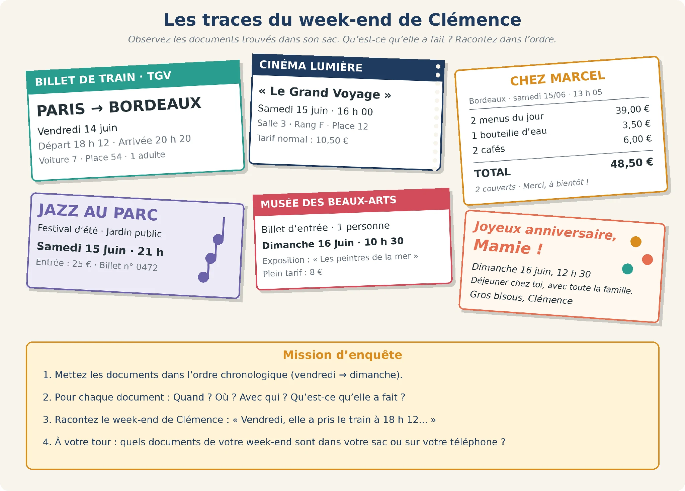
Documents simulés.
BILLET DE TRAIN · TGV : Paris → Bordeaux. Vendredi 14 juin. Départ 18 h 12 ; arrivée 20 h 20. Voiture 7 ; place 54 ; 1 adulte.
CINÉMA LUMIÈRE : « Le Grand Voyage ». Samedi 15 juin, 16 h 00. Salle 3 ; rang F ; place 12. Tarif normal : 10,50 €.
CHEZ MARCEL : Bordeaux, samedi 15/06, 13 h 05. Deux menus du jour : 39,00 € ; une bouteille d’eau : 3,50 € ; deux cafés : 6,00 €. Total : 48,50 €. Deux couverts.
JAZZ AU PARC : festival d’été, jardin public. Samedi 15 juin, 21 h. Entrée : 25 € ; billet n° 0472.
MUSÉE DES BEAUX-ARTS : billet d’entrée, une personne. Dimanche 16 juin, 10 h 30. Exposition « Les peintres de la mer ». Plein tarif : 8 €.
Joyeux anniversaire, Mamie ! Dimanche 16 juin, 12 h 30. Déjeuner chez toi, avec toute la famille. Gros bisous, Clémence.
Mission d’enquête : 1. Mettez les documents dans l’ordre chronologique (vendredi → dimanche). 2. Pour chaque document : Quand ? Où ? Avec qui ? Qu’est-ce qu’elle a fait ? 3. Racontez le week-end de Clémence : « Vendredi, elle a pris le train à 18 h 12… ». 4. À votre tour : quels documents de votre week-end sont dans votre sac ou sur votre téléphone ?
Six documents authentiques simulés : reconstituer un week-end au passé composé
| Jour | Heure | Document | Où ? | Qu’est-ce qu’elle a fait ? |
|---|---|---|---|---|
Astuce
Prolongement « Mes traces » : prenez en photo ou faites une capture d’écran de 3 traces de votre week-end (ticket, billet, message, photo) et insérez-les ci-dessous ou partagez-les à l’écran. Votre professeur devine le récit (Tu es allé(e) au cinéma samedi ?), puis vous racontez et vous corrigez ses hypothèses.
Votre trace n° 1
Trace n° 2
Trace n° 3
Seu texto da versão anterior foi preservado. Você pode aproveitá-lo nos novos campos.
Mes traces
Escolha três registros no seu dispositivo, sem enviar arquivos. Descreva cada um e escreva uma frase que conte o acontecimento.
Localize a data, a hora e o lugar em cada documento antes de escrever a ação.
Os documentos são simulados. Reconstrua o relato a partir das evidências, não apenas das imagens.
Cruze data, hora, lugar e atividade de cada registro. O bilhete mostra um deslocamento; o ingresso de cinema e o programa de jazz mostram atividades distintas. Use a ordem temporal para ligar esses documentos em um relato.
Compare as informações e as formas abaixo com o que você escreveu. Nas partes livres, use-as como apoio, não como uma única resposta possível.
Vendredi 14 juin, Clémence a pris le train à Paris à 18 h 12 et elle est arrivée à Bordeaux à 20 h 20. Samedi, à 13 h 05, elle a déjeuné chez Marcel avec une autre personne (2 couverts) et elle a payé 48,50 €. À 16 heures, elle est allée au cinéma Lumière : elle a vu « Le Grand Voyage ». Le soir, à 21 heures, elle est allée au festival Jazz au parc. Dimanche, à 10 h 30, elle a visité l’exposition du musée des Beaux-Arts. À 12 h 30, elle a déjeuné chez sa grand-mère pour son anniversaire.
Esta revisão é sua. O site não atribui nota à produção livre.
Seu trabalho
Salve neste navegador ou baixe uma cópia. Não há envio automático ao professor.
Salve suas respostas antes de fechar.
Continuidade
Mission bonus B · Communiquer au passé composé
Unité 10 · Bônus B
Pratique perguntas, situações de comunicação e quatro textos de compreensão.
La situation
Communiquer au passé composé : poser des questions, répondre et raconter dans différentes situations.
Use o banco de perguntas como apoio. Prepare as cenas e explore os quatro textos, retomando os detalhes necessários para justificar cada resposta.
J’observe
Este bônus amplia o uso do passado em perguntas e respostas, seis situações de comunicação e quatro leituras. Use os modelos para preparar suas falas, não para substituir sua produção.
Cette partie renforce l’usage oral et écrit du passé composé : une banque de questions, des exercices de questions-réponses, six situations de communication dont une scène complète au commissariat, et quatre textes de compréhension.
J’observe
Escolha a pergunta de acordo com a informação que deseja saber: lugar, tempo, companhia, ação, maneira ou motivo. Compare a pergunta com a resposta-modelo antes de praticar.
| Type de question | Exemples | Réponse modèle |
|---|---|---|
| Oui / non (intonation) | Tu as bien dormi ? · Vous avez aimé le film ? · Il est venu ? | Oui, j’ai bien dormi. / Non, il n’est pas venu. |
| Est-ce que | Est-ce que tu as fini ? · Est-ce que vous êtes sortis hier ? | Oui, nous sommes sortis au cinéma. |
| Qu’est-ce que (objet, action) | Qu’est-ce que tu as fait / mangé / acheté / vu ? | J’ai acheté un livre. |
| Qui (sujet) | Qui a gagné ? · Qui est venu à la fête ? · Qui a payé ? | Paul a gagné. / Tous mes amis sont venus. |
| Où | Où est-ce que tu es allé(e) ? · Vous avez dormi où ? | Je suis allé(e) à Rome. / Nous avons dormi à l’hôtel. |
| Quand / À quelle heure | Quand est-ce qu’elle est partie ? · À quelle heure tu t’es levé(e) ? | Elle est partie hier. / Je me suis levé(e) à 7 h. |
| Avec qui / À qui | Avec qui tu es parti(e) ? · À qui tu as téléphoné ? | Avec ma sœur. / J’ai téléphoné à ma mère. |
| Comment | Comment vous êtes venus ? · C’était comment ? | Nous sommes venus en bus. / C’était super ! |
| Combien / Combien de temps | Combien tu as payé ? · Combien de temps vous êtes restés ? | J’ai payé 20 €. / Nous sommes restés une semaine. |
| Pourquoi | Pourquoi tu es rentré(e) tard ? · Pourquoi elle n’est pas venue ? | Parce que j’ai raté le bus. / Parce qu’elle a été malade. |
| Déjà / jamais | Tu as déjà vu la mer ? · Vous êtes déjà allés en Afrique ? | Oui, déjà ! / Non, je ne suis jamais allé(e) en Afrique. |
| Question sur une autre personne | Qu’est-ce que ton frère a fait ? · Où tes parents sont allés ? | Il a travaillé. / Ils sont allés à la mer. |
Règle
Trois façons de poser la même question : 1. Tu es allé où ? (oral familier) · 2. Où est-ce que tu es allé ? (standard) · 3. Où es-tu allé ? (inversion, soutenu : à reconnaître).
Avec l’inversion, le pronom se place après l’auxiliaire : As-tu mangé ? Êtes-vous partis ? Où est-elle allée ? Avec il / elle, on ajoute -t- si besoin : A-t-il fini ?
Associe cada pergunta à resposta que traz a informação pedida.
Escolha uma resposta em cada item.
01Où est-ce que vous êtes partis ?
02Avec qui elle est sortie ?
03Combien de temps tu es resté(e) ?
04Qu’est-ce que vous avez visité ?
05Pourquoi il n’est pas venu ?
06Comment tu es rentré(e) ?
07Qui a fait le gâteau ?
08C’était comment ?
Responda no seu ritmo. Depois, confira.
Formule uma pergunta para a informação destacada em cada frase.
Utilisez est-ce que + mot interrogatif.
Seu texto da versão anterior foi preservado. Você pode aproveitá-lo nos novos campos.
Identifique primeiro o tipo de informação: lugar, hora, companhia, quantidade ou motivo.
Compare a forma sugerida sem reduzir todas as perguntas possíveis a uma única redação.
A expressão destacada indica qual informação deve ser perguntada. Compare lugar, horário, companhia, objeto, maneira, valor, duração e motivo. A formulação pode variar, mas precisa continuar perguntando pela mesma informação.
Compare as informações e as formas abaixo com o que você escreveu. Nas partes livres, use-as como apoio, não como uma única resposta possível.
1. Où est-ce que vous êtes allés ?
2. À quelle heure est-ce qu’elle est arrivée ?
3. Avec qui est-ce que tu as dîné ?
4. Qu’est-ce qu’ils ont acheté ?
5. Comment est-ce que tu es rentré ?
6. Qui a gagné le match ?
7. Combien est-ce qu’elle a payé ?
8. Combien de temps est-ce que vous êtes restés ?
9. Pourquoi est-ce qu’il est parti ?
10. À qui est-ce que tu as téléphoné ?
Esta revisão é sua. O site não atribui nota à produção livre.
Responda com uma frase completa, seguindo as pistas entre parênteses.
Attention à l’auxiliaire, à l’accord et à la négation.
Seu texto da versão anterior foi preservado. Você pode aproveitá-lo nos novos campos.
Observe a pessoa da pergunta, o auxiliar e a presença de negação.
As pistas orientam o conteúdo; a produção continua aberta a formulações equivalentes.
As pistas definem o conteúdo da resposta. Transforme-as em uma frase completa com o sujeito adequado e revise a negativa quando solicitada. Nas formas com être, observe a identidade de quem fala.
Compare as informações e as formas abaixo com o que você escreveu. Nas partes livres, use-as como apoio, não como uma única resposta possível.
1. Oui, je suis sorti(e) au restaurant.
2. Non, ils ne sont pas venus.
3. J’ai mangé des céréales.
4. Elle s’est levée à 6 heures.
5. Non, nous n’avons jamais pris le TGV.
6. Parce que le bus n’est pas passé.
Esta revisão é sua. O site não atribui nota à produção livre.
Je joue
Use este jogo para recuperar as formas estudadas. Primeiro tente responder; depois consulte a ajuda para revisar.
Objectif : automatiser la question au passé composé et la réponse complète.
Escolha um evento e sorteie o tipo de pergunta.
J’observe
Você vai acompanhar uma declaração de roubo fictícia. Durante a conversa, observe quando e onde aconteceu, a sequência do trajeto e o que a pessoa fez depois.
Un commissariat ou un policier à son bureau
Un sac, un portefeuille ou un téléphone
J’écoute et je lis
Laura relata o desaparecimento de sua bolsa. Acompanhe a ordem dos acontecimentos e as perguntas que ajudam a esclarecer a situação.
Bonjour, madame. Je vous écoute.
Bonjour. On m’a volé mon sac ! Je viens déclarer un vol.
D’accord. Asseyez-vous. Quand est-ce que c’est arrivé ?
Ce matin, vers 9 heures.
Et où est-ce que vous étiez ? Racontez-moi.
Je suis sortie de chez moi à 8 h 30. J’ai pris le métro, ligne 4. Je suis descendue à la station Châtelet. Là, il y a eu beaucoup de monde. Un homme a poussé tout le monde, il s’est excusé... et après, je n’ai pas trouvé mon sac !
Vous avez vu l’homme ?
Oui, un peu. Il a environ 30 ans, il est grand, il a les cheveux courts et une veste noire.
Qu’est-ce qu’il y a dans le sac ?
Mon portefeuille avec ma carte bancaire, mes clés et mon téléphone.
Vous avez appelé votre banque ?
Oui, j’ai appelé tout de suite et j’ai bloqué ma carte.
Très bien. Je vais remplir la déclaration. Votre nom, s’il vous plaît ?
Laura Mendes.
Acompanhe a declaração de Laura e reconstrua o que aconteceu.
Seu texto da versão anterior foi preservado. Você pode aproveitá-lo nos novos campos.
Separe horário, trajeto, descrição e ações tomadas depois do ocorrido.
Use o diálogo para preencher a declaração da etapa seguinte; não invente dados que ele não fornece.
Laura é quem diz je suis sortie e je suis descendue; o homem é o sujeito de il s’est excusé. Ao analisar a concordância, mantenha essas referências separadas. No formulário, use apenas os dados informados no diálogo.
Compare as informações e as formas abaixo com o que você escreveu. Nas partes livres, use-as como apoio, não como uma única resposta possível.
1. Pour déclarer le vol de son sac.
2. À 8 h 30 ; en métro.
3. À Châtelet.
4. Il a poussé les gens et il s’est excusé (et il a volé le sac).
5. Son portefeuille, sa carte bancaire, ses clés et son téléphone.
6. Elle a appelé sa banque et bloqué sa carte.
7. suis sortie, suis descendue, s’est excusé : Laura est une femme → accord au féminin.
Esta revisão é sua. O site não atribui nota à produção livre.
J’observe
Preencha a declaração com as informações dadas por Laura. Separe os dados objetivos da sequência de acontecimentos e não invente informações ausentes no diálogo.
Je parle
Prepare as perguntas de quem recebe a declaração e o relato de uma das situações propostas. No treino individual, escreva as duas partes; na conversa acompanhada, troque os papéis.
Situation : B a été victime d’un vol. A est policier / policière et remplit la déclaration.
No estudo individual, prepare as falas dos dois papéis. Escolha primeiro um deles, responda em voz alta e depois troque de papel. Na conversa acompanhada, use essas anotações como apoio.
Boîte à outils : On m’a volé... · Je suis sorti(e)... · J’ai laissé mon vélo... · Quand je suis revenu(e), il n’est plus là · Je n’ai rien vu · J’ai appelé...
🔄 Puis inversez les rôles : vous jouez B et votre professeur joue A.
J’observe
Agora você ouvirá uma testemunha de acidente. A tarefa é identificar o que ela observou e reconstruir a sequência antes de dar uma opinião.
Une rue avec un passage piéton, une voiture et un vélo
J’écoute et je lis
Uma testemunha conta o que viu. Observe a sequência de ações antes de organizar o relato e discutir sua interpretação.
Monsieur, vous avez vu l’accident ?
Oui, j’ai tout vu ! J’ai attendu au passage piéton. Le feu est passé au rouge.
Et après ?
Un cycliste est arrivé très vite. Il n’a pas regardé le feu. Une voiture blanche est sortie du parking et le cycliste est tombé.
Le conducteur s’est arrêté ?
Oui, il s’est arrêté tout de suite et il a appelé les pompiers. Moi, j’ai aidé le cycliste à se relever.
Le cycliste a eu mal ?
Il a eu mal au bras, mais il a parlé normalement. Les pompiers sont arrivés dix minutes après.
Organize o testemunho em sequência e diferencie fato de opinião.
Seu texto da versão anterior foi preservado. Você pode aproveitá-lo nos novos campos.
Retome a ordem em que chegam o ciclista, o carro e os bombeiros.
A justificativa e o novo jogo de papéis são produções abertas.
A ordem das ações é sustentada pelo testemunho. Já a responsabilidade pelo acidente é uma pergunta de opinião: justifique-a com o que foi narrado, sem apresentá-la como um resultado automático do exercício.
Compare as informações e as formas abaixo com o que você escreveu. Nas partes livres, use-as como apoio, não como uma única resposta possível.
1. Au passage piéton.
2. Un cycliste est arrivé
une voiture est sortie
le cycliste est tombé
le conducteur a appelé les pompiers
les pompiers sont arrivés.
3. Réponse libre (le cycliste n’a pas regardé le feu).
Esta revisão é sua. O site não atribui nota à produção livre.
Je parle
A viagem terminou, mas a mala não chegou. Prepare o relato do passageiro e as perguntas do atendimento; use essas informações para preencher a ficha seguinte.
Situation : B est arrivé(e) de Lisbonne, mais sa valise n’est pas arrivée. A travaille au service bagages.
No estudo individual, prepare as falas dos dois papéis. Escolha primeiro um deles, responda em voz alta e depois troque de papel. Na conversa acompanhada, use essas anotações como apoio.
Boîte à outils : Je suis arrivé(e) de... · J’ai attendu... · Ma valise n’est pas arrivée · Elle est grande et rouge · J’ai mis... dedans
🔄 Puis inversez les rôles : vous jouez B et votre professeur joue A.
Je parle
Registre os dados da mala e da viagem informados na situação. Para os dados não fornecidos, prepare uma pergunta em vez de inventar uma resposta.
Relisez votre préparation, puis essayez de la dire à voix haute sans lire. Reprenez une phrase si elle n’est pas encore claire.
Je parle
Organize a reclamação sobre a noite no hotel. Depois assuma o atendimento: peça esclarecimentos, desculpe-se e proponha uma das soluções indicadas.
Situation : B est arrivé(e) hier à l’hôtel. La nuit a été terrible. A est le / la réceptionniste.
No estudo individual, prepare as falas dos dois papéis. Escolha primeiro um deles, responda em voz alta e depois troque de papel. Na conversa acompanhada, use essas anotações como apoio.
Boîte à outils : Je suis arrivé(e) hier soir · La climatisation n’a pas marché · Je n’ai pas dormi · J’ai appelé, mais personne n’a répondu · C’était horrible !
🔄 Puis inversez les rôles : vous jouez B et votre professeur joue A.
Je parle
Prepare o percurso profissional indicado e as perguntas do responsável pela entrevista. Observe como estudos, viagens e experiências de trabalho se encadeiam no passado.
Situation : B passe un entretien pour un poste dans un hôtel. A est le / la responsable des ressources humaines.
No estudo individual, prepare as falas dos dois papéis. Escolha primeiro um deles, responda em voz alta e depois troque de papel. Na conversa acompanhada, use essas anotações como apoio.
Boîte à outils : Je suis né(e) à... · J’ai fait des études de... · J’ai travaillé pendant... · Je suis parti(e)... · Je suis revenu(e)... · J’ai appris...
🔄 Puis inversez les rôles : vous jouez B et votre professeur joue A.
Je parle
Escolha uma boa notícia e conte em quatro frases como aconteceu. No outro papel, prepare uma reação, quatro perguntas e uma proposta para comemorar.
Situation : A appelle B pour annoncer une bonne nouvelle. B pose des questions.
No estudo individual, prepare as falas dos dois papéis. Escolha primeiro um deles, responda em voz alta e depois troque de papel. Na conversa acompanhada, use essas anotações como apoio.
Boîte à outils : Devine ! · J’ai réussi ! · Félicitations ! · Raconte ! · Et après, qu’est-ce que tu as fait ? · On fête ça ?
🔄 Puis inversez les rôles : vous jouez B et votre professeur joue A.
J’observe
Nas quatro leituras, acompanhe diferentes maneiras de relatar uma experiência. Leia um texto, trabalhe suas perguntas e só depois passe à próxima situação.
Je lis et j’observe
Sarah conta uma viagem para comemorar o aniversário de Léo. Observe os dias, as atividades e as mudanças de tempo; diferencie os fatos explícitos das informações que não aparecem no texto.
Le mois dernier, je suis partie à Amsterdam avec mon copain, Léo, pour son anniversaire. Nous avons pris le train vendredi soir et nous sommes arrivés à la gare centrale à 21 heures. Nous avons dormi dans un petit hôtel au bord d’un canal.
Samedi, nous nous sommes levés tôt. D’abord, nous avons loué deux vélos : à Amsterdam, tout le monde fait du vélo ! Ensuite, nous avons visité le musée Van Gogh. L’après-midi, nous avons fait une promenade en bateau sur les canaux. C’était magnifique, mais il a fait froid. Le soir, nous avons dîné dans un restaurant indonésien.
Dimanche matin, il a plu. Nous sommes restés à l’hôtel et nous avons pris un long petit-déjeuner. Puis nous sommes allés au marché aux fleurs et j’ai acheté des tulipes pour ma mère. Nous sommes rentrés dimanche soir, fatigués mais très contents. Léo a adoré son cadeau !
Leia o relato de Sarah e explore três aspectos: compreensão, localização de informações e análise das formas.
A. Vrai, faux ou on ne sait pas ?
A1Sarah est partie seule.
A2Ils sont arrivés vendredi soir.
A3Ils ont dormi chez des amis.
A4Il a fait beau tout le week-end.
A5Léo aime le vélo.
Responda no seu ritmo. Depois, confira.
À vous d’écrire
Na análise, relacione as terminações ao sujeito e os organizadores à sequência.
Não confunda uma informação ausente com uma informação falsa. Na análise das formas, partie se refere a Sarah sozinha, enquanto arrivés se refere a Sarah e Léo. Os organizadores mostram como o relato avança.
Compare as informações e as formas abaixo com o que você escreveu. Nas partes livres, use-as como apoio, não como uma única resposta possível.
A1. Faux (avec Léo).
A2. Vrai.
A3. Faux (dans un hôtel).
A4. Faux (froid samedi, pluie dimanche).
A5. On ne sait pas.
B1. Pour l’anniversaire de Léo.
B2. Ils ont loué des vélos, visité le musée Van Gogh, fait une promenade en bateau, dîné dans un restaurant indonésien.
B3. Parce qu’il a plu.
B4. Des tulipes, pour sa mère.
C1. d’abord, ensuite, l’après-midi, le soir, puis.
C2. nous nous sommes levés.
C3. partie : Sarah seule (je, féminin) ; arrivés : Sarah et Léo (nous, groupe mixte).
Esta revisão é sua. O site não atribui nota à produção livre.
Seu texto da versão anterior foi preservado. Você pode aproveitá-lo nos novos campos.
Je lis et j’observe
Julien narra uma viagem que não saiu como planejado. Acompanhe os horários e identifique como um problema modifica a sequência do relato.
L’hiver dernier, j’ai eu une soirée incroyable. J’ai réservé un vol pour Paris à 22 heures. Je suis parti de chez moi à 19 heures, mais il a neigé toute la journée et mon taxi est resté une heure dans les embouteillages. Je suis arrivé à l’aéroport à 21 h 40. J’ai couru jusqu’au comptoir... trop tard ! L’avion est parti sans moi.
Je suis allé au guichet de la compagnie. L’employée a été très gentille : elle a trouvé une place dans l’avion du lendemain matin. J’ai dormi dans un hôtel près de l’aéroport. Le matin, je me suis réveillé à 5 heures, j’ai pris l’avion et je suis arrivé à Paris à 19 heures. J’ai raté le dîner d’anniversaire de mon père, mais je suis arrivé pour le dessert ! Depuis, je pars toujours trois heures avant.
Reconstrua a sequência da viagem de Julien e depois conte uma experiência sua.
Seu texto da versão anterior foi preservado. Você pode aproveitá-lo nos novos campos.
Use os acontecimentos do relato, não a ordem em que aparecem nas opções.
O relato pessoal é livre; revise a clareza da sequência.
O relato encadeia problema e solução. Reconstitua a viagem e depois avalie o final: Julien perde o jantar, mas chega para a sobremesa. Sua experiência pessoal pode ter outra sequência e outro desfecho.
Compare as informações e as formas abaixo com o que você escreveu. Nas partes livres, use-as como apoio, não como uma única resposta possível.
1. il est parti de chez lui
il a couru au comptoir
l’avion est parti
il est allé au guichet
il a dormi à l’hôtel
il est arrivé à Paris.
2. Il a neigé et son taxi est resté dans les embouteillages.
3. Elle a trouvé une place dans l’avion du lendemain.
4. Le dîner d’anniversaire de son père ; non, il est arrivé pour le dessert.
5. Production libre. Note : je pars toujours (présent d’habitude) est à commenter avec la classe.
Esta revisão é sua. O site não atribui nota à produção livre.
Je lis et j’observe
Ana conta seu primeiro mês em Lyon. Identifique as dificuldades iniciais, a ajuda recebida e as descobertas durante a adaptação.
Je suis arrivée à Lyon le 2 septembre pour faire un master. Le premier jour, j’ai eu un peu peur : je n’ai pas compris les annonces à l’aéroport ! Heureusement, une dame m’a montré le bon bus. Ensuite, j’ai cherché un appartement pendant deux semaines. J’ai visité huit appartements et finalement, j’ai trouvé une petite chambre près de l’université.
À l’université, j’ai rencontré des étudiants de partout : une Japonaise, deux Italiens, un Sénégalais... Nous sommes devenus amis très vite. Le premier week-end, nous sommes allés dans le Vieux Lyon, puis nous sommes montés à Fourvière et nous avons vu toute la ville. J’ai goûté le fromage, le saucisson et les quenelles. Je n’ai pas aimé les quenelles, mais j’ai adoré les pâtisseries ! Mon français a fait beaucoup de progrès : maintenant, je comprends les annonces !
Acompanhe a chegada de Ana à França: dificuldades, descobertas e mudanças.
Seu texto da versão anterior foi preservado. Você pode aproveitá-lo nos novos campos.
Localize os números, as pessoas que a ajudaram e os lugares visitados.
Ao contar sua própria chegada, organize as ações e inclua o que sentiu ou achou.
A adaptação de Ana inclui dificuldade, ajuda, procura de moradia e novas amizades. Use o texto para localizar essas etapas; no seu relato pessoal, organize o percurso sem precisar copiar a história dela.
Compare as informações e as formas abaixo com o que você escreveu. Nas partes livres, use-as como apoio, não como uma única resposta possível.
1. De Rio de Janeiro ; pour faire un master.
2. Elle n’a pas compris les annonces ; une dame.
3. Huit ; une petite chambre près de l’université.
4. Dans le Vieux Lyon, puis à Fourvière ; ils ont vu toute la ville.
5. Elle a adoré les pâtisseries ; elle n’a pas aimé les quenelles.
6. suis arrivée, sommes devenus, sommes allés, sommes montés.
7. Production libre.
Esta revisão é sua. O site não atribui nota à produção livre.
Je lis et j’observe
Leia a notícia simulada e separe as ações dos personagens. Depois reconte o acontecimento mudando o ponto de vista, sem transformar a atividade em orientação de segurança.
Nice, lundi 3 juin. Samedi après-midi, un jeune homme est entré dans une boulangerie de la rue de France. Il a demandé un croissant, puis il a pris l’argent de la caisse et il est sorti en courant. Mais une cliente de 78 ans, Mme Rosa Bianchi, a mis sa canne devant ses pieds. Le voleur est tombé sur le trottoir !
Deux passants ont aidé Mme Bianchi et ils ont appelé la police. Les policiers sont arrivés cinq minutes après et ils ont arrêté le jeune homme. « Je n’ai pas réfléchi, a expliqué Mme Bianchi. Je suis venue pour acheter du pain, et je suis repartie avec une médaille ! » Le maire a félicité la courageuse grand-mère dimanche matin.
Article simulé, niveau A1-A2
Leia a notícia simulada e reconte o acontecimento a partir de dois pontos de vista.
la neige, avion)
Fourvière)
police)
Seu texto da versão anterior foi preservado. Você pode aproveitá-lo nos novos campos.
Primeiro, identifique lugar, momento, pessoas e sequência de ações.
Mudar o narrador exige rever os sujeitos e as formas verbais; a produção é aberta.
Ao recontar como Mme Bianchi ou como o outro personagem, você muda quem diz je. Releia os verbos e as referências às outras pessoas, mantendo os acontecimentos da notícia simulada.
Compare as informações e as formas abaixo com o que você escreveu. Nas partes livres, use-as como apoio, não como uma única resposta possível.
1. À Nice, dans une boulangerie de la rue de France, samedi après-midi.
2. Il est entré, il a demandé un croissant, il a pris l’argent, il est sorti en courant.
3. Elle a mis sa canne devant ses pieds.
4. Deux passants ; ils ont arrêté le jeune homme.
5. Production libre.
Esta revisão é sua. O site não atribui nota à produção livre.
Seu trabalho
Salve neste navegador ou baixe uma cópia. Não há envio automático ao professor.
Salve suas respostas antes de fechar.
Continuidade
Mon bilan du niveau A1
Unité 10 · Balanço
Registre sua autoavaliação, sem gerar certificação ou conclusão automática.
La situation
Pour chaque ligne, notez-vous de 1 (je ne sais pas encore) à 4 (je sais le faire facilement).
Faça uma pausa para reconhecer o que já consegue fazer e o que ainda precisa praticar. Esta é sua percepção de aprendizagem, não uma nota de prova.
J’observe
Reflita sobre o que você consegue fazer em cada tema. Escolha de 1 a 4 conforme sua percepção e identifique o que gostaria de retomar. Este balanço não desbloqueia nem certifica unidades.
Mon bilan du niveau A1
Pour chaque ligne, notez-vous de 1 (je ne sais pas encore) à 4 (je sais le faire facilement).
Seu trabalho
Salve neste navegador ou baixe uma cópia. Não há envio automático ao professor.
Salve suas respostas antes de fechar.
Continuidade
Retome o que ainda precisa de prática.